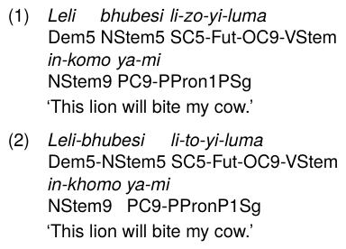
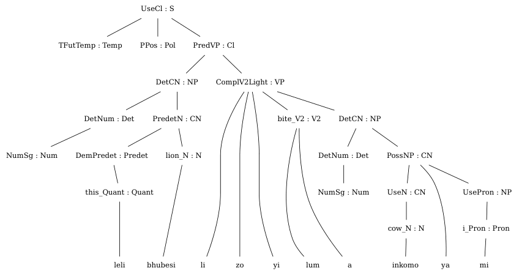
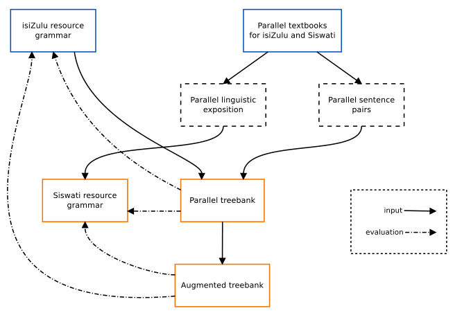
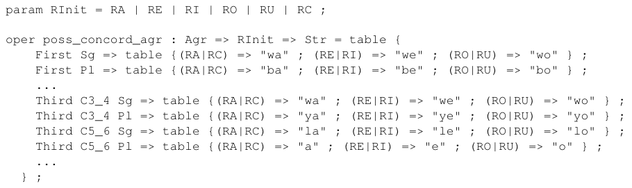
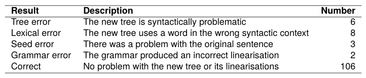

RAIL 2024Tafsiri ya mashine
Kuanzisha rasilimali za kisintaksia kutoka isiZulu hadi Siswati
Tafsiri ya mashine, haijakaguliwa na binadamu. Makala asili ndiyo toleo la rejeo; sentensi zilizopigiwa mstari ni zile ambazo ukaguzi wa kiotomatiki haukuwa na uhakika nazo.
Proceedings of the Fifth Workshop on Resources for African Indigenous Languages @ LREC-COLING 2024.
Tafsiri ya Ernst van Gassen (Arktos AI Lab), yenye leseni CC BY-NC 4.0 kama makala asili. Matumizi tena yanaruhusiwa kwa kutaja mwandishi, kwa matumizi yasiyo ya kibiashara tu. Waandishi asili hawajakagua wala kuidhinisha tafsiri hii.
Maandishi matupu ya kutumia tena, pamoja na leseni yake: Kiswahili · LESENI
Taasisi
Laurette Marais1, Laurette Pretorius2, Lionel Posthumus3
1Voice Computing Research group, CSIR
2Division of Computer Science, Department of Mathematical Sciences, Stellenbosch University
3CALT@UJ, University of Johannesburg
Anwani za barua pepe zimeondolewa kwa sababu za faragha. Zinapatikana katika PDF asilia.
Muhtasari
IsiZulu na Siswati ni lugha zinazoeleweka kwa pande zote ambazo zinachukuliwa kuwa na rasilimali chache licha ya hadhi yao kama lugha rasmi. Hata hivyo, rasilimali za lugha za kidijitali na kikompyuta zinazopatikana kwa isiZulu zinazidi kwa kiasi kikubwa zile za Siswati, kiasi kwamba inafaa kuchunguza ni kwa kiwango gani mbinu za uanzishaji zinaweza kutumiwa kuunda rasilimali za Siswati. Katika makala hii, tunawasilisha uundaji wa sarufi ya kikompyuta na treebank sambamba, kulingana na maelezo ya kiisimu sambamba ya lugha hizo mbili.
Maneno Muhimu
Grammatical Framework, treebank sambamba, sarufi ya kikompyuta
1. Utangulizi
IsiZulu na Siswati ni Lugha za Kibantu za Kusini ambazo ni za kundi la Nguni, na kwa hivyo ni lugha zenye mofolojia tajiri ambazo zina mfumo wa ngeli ambao kwa upande wake huzalisha upatanisho wa viambishi. Lugha za Nguni zina tahajia unganishi na pia zinaonyesha uambishaji mkubwa wa kimofofonolojia, na kusababisha tokeni ndefu ambazo uchanganuzi wa kimofolojia wake si rahisi.
Lugha za Nguni zinaeleweka kwa pande zote (Ndhlovu, 2022), na sifa hii inaruhusu kunufaika katika muktadha wenye rasilimali chache. Ingawa isiZulu ni lugha rasmi ya Afrika Kusini, na Siswati ni lugha rasmi ya Afrika Kusini na Ufalme wa Eswatini, zote mbili hazina rasilimali za kutosha, Siswati kwa kiwango kikubwa zaidi kuliko isiZulu (Moors et al., 2018).
Kazi ya awali ya Bosch et al. (2008) ilionyesha uwezekano wa kuanzisha vichanganuzi vya kimofolojia vya hali ya mwisho kwa kufuata mbinu ya kimfumo. Katika hali hii, isiZulu ilitumika kama kianzio ambacho rasilimali za lugha nyingine za Kinguni zingeweza kutengenezwa. Baadhi ya matokeo muhimu ya kazi hii yalikuwa kwamba uanzishaji kati ya lugha za Kinguni unapunguza kwa kiasi kikubwa muda wa utengenezaji, jambo ambalo linaweza kuwa muhimu katika muktadha wa lugha zisizo na rasilimali za kutosha. Mbinu ya uanzishaji pia husababisha umakini maalum kupewa tofauti kati ya lugha hizo: "Kwa kutumia mawasiliano na uhusiano wa kilugha, juhudi zaidi zinaweza kutumika kwa vipengele ambavyo lugha hizo hutofautiana, kuhakikisha bidhaa za mwisho za ubora wa juu, kilugha na kikompyuta." (Bosch et al., 2008, uk. 85)
Hatua inayofuata ya asili itakuwa kuchunguza matumizi ya mbinu ya uanzishaji zaidi ya mofolojia hadi sintaksi. Kianzio chetu cha kazi hii ni sarufi ya rasilimali ya isiZulu ya Grammatical Framework (GF), kwa lengo kuu la kuanzisha sarufi ya rasilimali ya Siswati. Katika mchakato huo, tunatengeneza treebank sambamba kwa mkono, ambayo kisha tunaiimarisha kwa kutumia sarufi za rasilimali sambamba ili kupata treebank kubwa zaidi ya nusu-sintetiki - ya kwanza kwa Siswati. Tunatathmini sarufi za rasilimali kwa kutathmini kwa mikono kikundi kidogo cha data iliyoongezwa ili kuhakikisha kwamba kazi za sarufi zinafanya kazi kama inavyotarajiwa zinapounganishwa kwa njia mpya.
Tuliegemeza mbinu yetu ya uanzishaji kwenye seti ya vitabu viwili vya kiada, kimoja cha isiZulu na kingine cha Siswati, ili kuhakikisha mbinu ya kimfumo na inayozingatia lugha. Hata hapa, kitabu cha kiada cha Siswati (Taljaard et al., 1991) "kimeegemezwa kwa kiasi kikubwa" kwenye kitabu cha kiada cha isiZulu (Taljaard and Bosch, 1988) na kinawashirikisha waandishi wawili wa kitabu cha isiZulu pamoja na mwanaisimu mtaalamu wa Siswati. Kwa maana fulani, tunategemea "uanzishaji" wa maelezo ya lugha ya ubora wa juu na wanaisimu ili kuongoza mbinu ya uanzishaji ya kimfumo na ya kuaminika kwa rasilimali za kikompyuta.
2. Usuli
Uanzishaji wa sarufi za rasilimali, hasa sarufi za rasilimali za GF, umefanywa kwa lugha mbalimbali zinazohusiana, huku kazi muhimu zaidi ikiwa ni ile ya Runyankore na Rukiga na Nabende et al. (2020), pamoja na kazi ya Lugha za Kibantu za Kenya (Ekegusii, Kikamba na Swahili) na Kituku et al. (2021). Kutokana na hali ya lugha hizi kuwa na rasilimali chache, korasi za tathmini zinazofaa hazipo na zinahitaji utayarishaji maalum. Kwa hiyo, tathmini kamili ya sarufi za rasilimali za Runyankore na Rukiga haijaripotiwa. Tathmini ya Lugha za Kibantu za Kenya ililenga vipengele vya uhandisi wa programu vya uanzishaji, bila kutajwa mahususi usahihi wa mwisho wa sarufi. Vipande vya lugha vilivyotumika katika upimaji wa kurudia wakati wa uundaji vilitafsiriwa kutoka kwa mifano ya Kiingereza inayoonyesha kusudi la kila kazi katika sarufi. Kwa upande wa ufunikaji, basi sarufi za rasilimali za Lugha za Kibantu za Kenya hazijakomaa kama sarufi ya rasilimali ya isiZulu. Kwa mfano, katika hazina ya GF Github, functor ya Lugha za Kibantu za Kenya ina kazi moja tu ya kuunda vishazi vya vitenzi, yaani UseV, ambayo hutumika kwa vitenzi visivyochukua yambwa. Sarufi za rasilimali za isiZulu (na sasa Siswati), kinyume chake, zinajumuisha kazi 21 za kuunda vishazi vya vitenzi, zikifunika pia vitenzi vichukuavyo yambwa, muundo wa kirejeshi, miundo ya kikopulati, urekebishaji wa kielezi na vitenzi vyenye vijalizo vya kitenzi na sentensi.
Kwa hiyo, ingawa kazi za awali za GF zipo kwa Lugha nyingine za Kibantu, ni vigumu kutoa ulinganisho wa moja kwa moja wa kazi yetu na juhudi hizo nyingine.
Lengo letu ni kutumia rasilimali zilizopo za kiisimu za isiZulu na Siswati ili kuweka msingi wa uanzishaji wetu wa sarufi ya rasilimali ya Siswati kwenye ufafanuzi wa kimfumo na sambamba wa sifa za kiisimu za lugha hizo mbili.
3. Ulinganisho wa isiZulu na Siswati
Kama ilivyo katika Lugha zote za Kibantu, muundo wa isiZulu na Siswati umejikita kwenye kanuni mbili, yaani uainishaji wa nomino (mfumo wa ngeli) na upatanisho wa viambishi vya upatanisho katika kategoria mbalimbali za maneno (mfumo wa viambishi vya upatanisho). Hizi ni sifa 2 tu bora za Lugha za Kibantu.
Kwa ujumla, nomino ina sehemu kuu mbili, yaani kiambishi awali cha ngeli na shina la nomino. Zaidi ya hayo, kila nomino ni ya kile kinachoitwa ngeli kwa sababu ya umbo la kiambishi awali chake, pia hujulikana kama jinsia ya ngeli yake. Dhana hii ya jinsia ya ngeli ni muhimu kwa kuwa inazalisha upatanisho wa kisarufi kwa njia ya viambishi awali hivi vya ngeli, pia huitwa viambishi awali vya nambari ya jinsia. Ngeli hizi zina nambari, na mfumo wa ngeli wa isiZulu na Siswati unafanana sana.
Kipatanishi ni kipengele cha kimuundo (alama ya upatanisho/mofimu) ambacho kinaashiria rasmi uhusiano kati ya nomino na maneno mengine yote katika sentensi ambayo yana uhusiano wa moja kwa moja wa kisemantiki-kisintaksia na nomino. Upatanisho wa jinsia uliotajwa hapo juu lazima uzingatiwe katika sehemu zote za usemi ambazo zimeunganishwa moja kwa moja na nomino. Kwa hiyo, tunasema kwamba kategoria za maneno kama vile vitenzi, viwakilishi, vivumishi, virejeshi, vimilikishi n.k. huletwa katika upatanisho wa viambishi vya upatanisho (yaani kisarufi) kwa njia ya viambishi hivi vya upatanisho. Mifano (1) na (2) inaonyesha sentensi ya isiZulu na ya Siswati, mtawalia.

Kabla ya kuorodhesha idadi ya tofauti za kimfumo kati ya isiZulu na Siswati ambazo tunazitumia katika mchakato wetu wa kujianzishia, tunachunguza kwa makini mifano (1) na (2). Shina moja la nomino -bhubesi, shina la kitenzi, kionyeshi cha ngeli ya 5, kiambishi upatanishi cha kiima cha ngeli ya 5, kiambishi upatanishi cha yambwa cha ngeli ya 9, kiambishi upatanishi cha kimilikishi cha ngeli ya 9 na kiwakilishi cha kimilikishi, nafsi ya kwanza umoja, vinafanana. Zaidi ya hayo, katika lugha zote mbili shina la nomino la 'ng'ombe' ni -khomo. Hata hivyo, katika isiZulu umbo la uso la ngeli ya 9 linategemea kanuni ya mbadala wa kimofofonolojia na linatamkwa kama -komo. Mwishowe, mofimu ya wakati ujao ni -zo katika isiZulu na -to katika Siswati.
Kama hatua ya kwanza, tofauti muhimu za kawaida za kimofofonolojia kati ya lugha hizo mbili zinaweza kupangwa kwa utaratibu kama ifuatavyo (Mordaunt et al., 2023; Bosch et al., 2008; Taljaard and Bosch, 1988; Taljaard et al., 1991):
- Alfabeti na kuachwa kwa midoko: Ingawa lugha zote mbili hutumia alfabeti ya Kilatini (A-Z), Siswati huacha Q na X, wakati katika isiZulu /q/ na /x/ huwakilisha konsonanti za midoko. Katika isiZulu sauti za midoko /c/, /q/ na /x/ huwakilishwa na sauti ya mdoko /c/ katika Siswati. kwa mfano, -qina (zul) na -cina (ssw) zote mbili zinamaanisha 'kuwa mgumu'.
- Ubadilishaji au uongezaji wa konsonanti: /z/ ambayo mara nyingi hutokea katika mizizi/mashina ya isiZulu na katika viambishi awali na vipatanishi vya ngeli ya 8 na 10, kwa kawaida hubadilishwa na /t/ katika Siswati. kwa mfano, -zama (zul) na -tama (ssw) zote mbili zinamaanisha 'jaribu'.
/th/ na /t/ katika isiZulu kwa kawaida hutamkwa kama /tf/ zinapofuatwa na /o/, /u/ na /w/, na kama /ts/ zinapofuatwa na /a/, /e/ na /i/ katika Siswati. Mifano ni -thola (zul) na -tfola (ssw), zinazomaanisha 'tafuta', na -thatha (zul) na -tsatsa (ssw), zinazomaanisha 'chukua'.
/d/ katika isiZulu hubadilika kuwa /dv/ inapofuatwa na /o/, /u/ na /w/, na kuwa /dz/ inapofuatwa na /a/, /e/ na /i/ katika Siswati, kwa mfano -dubula (zul) na -dvubula (ssw), kumaanisha 'piga risasi', na -dabula (zul) na -dzabula (ssw), kumaanisha 'rarua'.
Tofauti nyingine ni vikundi vya konsonanti /mp/ na /nk/ katika isiZulu ambavyo huwa /mph/ na /nkh/ katika Siswati, kwa mfano impendulo (zul) na imphendulo (ssw), kumaanisha 'jibu'.
- Ufutaji, uongezaji na ubadilishaji wa irabu kabla ya kiambishi awali: Kiambishi awali cha ngeli ya isiZulu kinajumuisha mfuatano wa konsonanti-irabu (pia hujulikana kama kiambishi awali cha msingi), kikitanguliwa na kile kiitwacho augment (pia hujulikana kama kiambishi awali kabla ya ngeli), irabu nakala inayotangulia inayotekeleza kazi tofauti za kisarufi, k.m. uhakika na ubainifu, na inakabiliwa na michakato ya mofofonolojia kama vile ufutaji wa irabu na muunganiko wa irabu. Katika Siswati augment hii ipo tu katika ngeli za 1, 3, 4 na 6 na katika ngeli ya 9 (ambapo inatangulia konsonanti ya nazali). Zaidi ya hayo, katika ngeli ya 6 kiambishi awali hiki kabla ya ngeli ni /e/ na si /a/. Mfano ni amakati (zul) na emakati (ssw) kwa 'paka'.
- Muundo wa uhusishi na viambishi vya upatanisho: Ingawa muundo wa uhusishi katika isiZulu una a- kama kile kiitwacho mofimu ya uhusishi, mofimu ya uhusishi katika Siswati ni la-. Katika lugha zote mbili a- na la- mtawalia huambatana na irabu ya kiambishi awali cha msingi na muunganiko wa irabu hufanyika kuvuka konsonanti kuunda kiambishi cha upatanisho cha uhusishi. Mfano ni umfana omunye (zul) na umfana lomunye (ssw), kutoka a+munye na la+munye, kumaanisha 'mvulana mwingine'.
- Vipengele vya kileksika: Ingawa lugha hizo mbili zinashiriki mizizi/mashina mengi ya nomino na vitenzi, kileksika kuna tofauti, kwa mfano -phuza (zul) na -natsa (ssw), kumaanisha 'kunywa'.
- Tahajia: Katika isiZulu, viashiria vyaonyesho huandikwa kwa mtengano na nomino inayofuata, huku katika Siswati kiashiria chaonyesho cha nafasi ya kwanza ('huyu/hawa') kikiandikwa kwa muungano na nomino inayofuata, kama ilivyo katika mfano (1): leli bhubesi (zul) dhidi ya lelibhubesi (ssw), kumaanisha 'simba huyu'.
- Amri: Katika mashina ya vitenzi yenye silabi moja ya isiZulu, yi- au i- huambishwa mbele au -na huambishwa nyuma kwenye shina kwa amri inayoelekezwa kwa mtu mmoja. Katika Siswati -ni huambishwa nyuma kwenye shina la kitenzi, kwa mfano Yidla/Idla/Dlana! (zul) na Dlani! (ssw), kumaanisha 'Kula!', ikielekezwa kwa mtu mmoja.
Kwa muhtasari, tofauti 1-3 hapo juu zinatumika kwa lugha hizo mbili katika miundo yote na vipengele vyote vya kileksika. Sambamba na ufafanuzi huu wa jumla, kuna ufafanuzi sambamba unaozingatia kategoria za neno na miundo ya kisarufi wa Taljaard na Bosch (1988) na Taljaard et al. (1991), wawili hawa wa mwisho wakitoa mitazamo ya kivitendo inayolenga sarufi, inayofaa kabisa kwa matumizi ya moja kwa moja na utekelezaji katika uanzishaji wa sarufi ya Siswati kutoka isiZulu RG.
4. Sarufi rasilimali ya GF ya isiZulu
Sarufi rasilimali ya isiZulu (isiZulu RG) iliyotumika katika kazi hii imetekelezwa katika Mfumo wa Sarufi (GF), mfumo wa sarufi wa kikompyuta kwa ajili ya uundaji wa sarufi za lugha nyingi. Mfumo huu unatumia usanifu wa lugha ya kati, kiasi kwamba sarufi ya GF inajumuisha sintaksi dhahania na sintaksi halisi moja au zaidi, moja kwa kila lugha. Kategoria dhahania na kazi zinafafanuliwa katika sintaksi dhahania, ambazo zinatekelezwa katika sintaksi halisi kama kategoria za upangaji mfuatano na kazi za upangaji mfuatano. Mazingira ya utekelezaji ya GF huwezesha upangaji mfuatano wa miti ya sintaksi dhahania kuwa mifuatano ya lugha asilia, pamoja na uchanganuzi wa mifuatano ya lugha asilia kuwa miti ya sintaksi dhahania (Ranta, 2011).
Sarufi rasilimali za GF kwa kawaida ni sehemu ya Maktaba ya Sarufi Rasilimali (RGL), ambayo inashiriki sintaksi dhahania ya pamoja na viendelezi maalum kati ya lugha zaidi ya 40 (Ranta et al., 2020). Kategoria na kazi ni za kisintaksia kwa asili, zikiwa na kategoria za nomino, vishazi vya nomino, vitenzi, vipindi vya vitenzi, vishazi vya vielezi, vishazi, sentensi, n.k., pamoja na kazi za kuunganisha kategoria hizi kuwa miundo ya miti.
Hapo awali, dhamira ya RGL ilikuwa kutumika kama maktaba ya programu ya kilugha ili kuwezesha uundaji wa haraka wa sarufi mahususi za matumizi (Ranta, 2009). Utekelezaji wa kategoria za kisintaksia na kazi ungenasa mofolojia na sintaksi ya jumla ya lugha, ambayo inaweza kisha kutumika tena na sarufi za matumizi kwa kesi mahususi za matumizi. Hivi karibuni zaidi, hata hivyo, jitihada zimefanywa kutumia sarufi za matumizi ya jumla za RGL kuelekea uchanganuzi wa wigo mpana na pia kwa kuunda treebank za Universal Dependencies (Ranta et al., 2020).
isiZulu RG inaiga mofolojia na sintaksi ya isiZulu kupitia utekelezaji wa baadhi ya kazi kutoka sintaksi dhahania ya kawaida ya RGL, pamoja na seti ya kazi dhahania za ziada mahususi za lugha (Marais and Pretorius, 2023b).
Kufuatia mkabala wa kawaida kwa utekelezaji wa Lugha za Kibantu, isiZulu RG inaiga lugha katika kiwango cha neno ndogo. Kwa ufupi, hii inamaanisha kwamba tokeni za msingi za sarufi hazilingani na maneno ya kitahajia bali na sehemu za neno ndogo, ambazo huunganishwa pamoja wakati wa utekelezaji kwa kutumia usaidizi wa uhandisi wa tahajia uliojengwa ndani katika GF C-runtime (Angelov, 2015). Mfano wa hili umetolewa katika Kielelezo 1, ukionyesha jinsi sehemu za uso za sentensi ya isiZulu katika mfano (1) katika Sehemu ya 3 zinavyotolewa na kazi tofauti katika isiZulu RG. Tutasema zaidi kuhusu jinsi ubadilishaji wa mofofonolojia unavyoigwa katika Sehemu ya 6.3.

Kielelezo 1: Mti wa uchanganuzi wa GF kwa mfano (1)
5. Mbinu
Mbinu yetu imeonyeshwa katika Kielelezo 2. Tulianza na rasilimali mbili (zilizoonyeshwa kwa bluu) na kutoka kwazo tukaunda rasilimali tatu mpya (zilizoonyeshwa kwa machungwa). RG ya isiZulu inaunda msingi wa kikokotozi wa kazi hii, huku seti ya vitabu vya kiada sambamba ikitoa taarifa za kiisimu zinazohitajika kuunda na kutathmini sarufi mpya ya rasilimali ya Siswati.
RG ya isiZulu hadi sasa imetumika kupanua viingizo vyenye uchangamano wa kimofosintaksia katika WordNet ya isiZulu (Marais and Pretorius, 2023a), kama kichanganuzi cha kisintaksia cha madhumuni ya jumla kwa isiZulu (Marais and Pretorius, 2023b) na kama utaratibu wa kuzalisha data iliyo na maelezo kwa ajili ya kufunza mifano ya ugawaji wa kimofolojia kwa isiZulu (Mkhwanazi and Marais, 2024). Kwa hiyo tunaichukulia kama mfano uliokomaa wa isiZulu na msingi unaofaa wa kuunda mifano sawia kwa lugha zinazohusiana.
Matini sambamba zinatupatia aina mbili za taarifa, yaani maelezo sambamba ya kiisimu ya lugha hizo mbili, pamoja na sentensi za mfano sambamba za ubora wa juu zinazoonyesha vipengele vya kiisimu vilivyoelezwa katika vitabu. Maelezo sambamba ya kiisimu yalitumika kama msingi wa uundaji wa RG ya Siswati, huku mifano sambamba ilitumika kuunda treebank sambamba ya maendeleo. Hapa, RG ya isiZulu ilitumika kuchanganua mifano ili kuharakisha mchakato wa kupata uwakilishi wa mti kwa kila jozi ya sentensi sambamba.
Treebank yenyewe ilitumika kama jaribio la rejeshi wakati wa utengenezaji ili kuhakikisha kwamba marekebisho ya Siswati yalitoa upangaji mfuatano sahihi (mifuatano ya lugha asilia) kutoka kwenye miti, na pia ilitumika kuhakikisha kwamba hakuna makosa yaliyoletwa katika mchakato wa urekebishaji wa juu juu wa RG ya isiZulu ili kupunguza tofauti za msimbo. Tunatoa maelezo zaidi kuhusu mchakato huu katika Sehemu ya 6.
Tathmini ya mwisho ilihusisha uundaji wa benki ya miti iliyoboreshwa kulingana na ile iliyotumika katika maendeleo. Iliundwa kwa kutumia sheria chache za msingi zinazofafanua marekebisho ya miti na kutumika kwenye treebank ya utengenezaji. Kutoka kwenye miti mipya iliyoundwa, upangaji mfuatano katika isiZulu na Siswati ulizalishwa, na hizi zilitathminiwa kwa mikono. Hii ingehakikisha kuwa marekebisho yaliyofanywa kwenye Siswati kwa msingi wa maelezo ya lugha na yaliyotathminiwa wakati wa maendeleo kwenye treebank sambamba, yangejumlishwa kwenye miti mipya.

Kielelezo cha 2: Mbinu
6. Kurekebisha sarufi ya isiZulu kwa Siswati
6.1. Mpangilio wa faili za programu
Njia ya msingi zaidi ya kuanzisha GF RG mpya kutoka kwa ile iliyopo ni kufanya nakala ya faili zote zinazohusika na kubadilisha kwa njia maalum. Sharti la GF ni kwamba majina ya moduli halisi yawe na muundo 'XY.gf', ambapo X ni jina la moduli dhahania inayotekelezwa na Y ni msimbo unaoonyesha lugha husika, hasa ukiegemea kwenye msimbo wa lugha wa ISO wa herufi 3. Vichwa vya moduli halisi pia vina msimbo huu, na hivyo hatua ya kwanza itakuwa ni kubadilisha kwa utaratibu majina ya faili na vichwa. Sarufi mpya ya rasilimali kwa hiyo huanza kama nakala halisi ya ile ya awali, ambayo inaweza kubadilishwa hasa katika sehemu zile ambapo lugha hizo mbili zinatofautiana.
Bila shaka, sarufi ya awali ya rasilimali inaweza pia kuongezwa au kubadilishwa wakati kazi inaendelea kwenye sarufi mpya, jambo ambalo linaweza kusababisha tofauti za msimbo zisizo za lazima hivi karibuni. GF inahimiza muundo wa moduli wa sarufi, pamoja na matumizi ya functors ili kuiga lugha zinazohusiana kwa karibu kulingana na kanuni thabiti za uhandisi wa programu (Ranta, 2009). Hata hivyo, wakati muafaka wa kufanya utekelezaji sambamba kuwa functor unategemea kuwa na uelewa mzuri wa jinsi ufanano na tofauti kati ya lugha mbili au zaidi zinavyopaswa kuigwa. Dhamira yetu ni kupanua mkabala huu wa uanzishaji kwa lugha nyingine za Kinguni na kwingineko, na kwa hivyo tumeamua kutotekeleza functor bado, kwa kuwa functor iliyotekelezwa mapema inaweza kuwa kikwazo zaidi kuliko msaada.
Ili kupunguza mkengeuko wa msimbo kufuatia mkabala wa utekelezaji sambamba kabisa, mfumo wa moduli wa GF ulitumika ili tungo zote katika sarufi (mbali na mizizi na mashina yaliyojumuishwa katika moduli za leksimu) ziwe ndani ya moduli mbili kuu za rasilimali, yaani ResZul.gf na ResSsw.gf. Tungo hizi zingeweza kufikiwa na moduli nyinginezo kwa njia ya operesheni zilizofafanuliwa katika moduli za rasilimali pekee. Hii ingehakikisha kwamba tofauti katika kiwango cha othografia zingefafanuliwa kabisa katika moduli husika za rasilimali, huku tofauti za kimofosintaksi zingefafanuliwa katika kazi husika za ulinearisaji wa moduli halisi. Tofauti hizo kwa hivyo zinaweza kufuatiliwa kwa haraka kwa kutumia programu inayoonyesha tofauti za mstari kati ya faili, kama vile diff.
RG ya isiZulu ilijumuisha idadi ya moduli dhahania maalum, zikiiga vipengele vya isiZulu ambavyo havipatikani katika sintaksi dhahania ya kawaida. Faili hizi zilihamishwa hadi kwenye folda iliyoitwa 'nguni', ili ziweze kutumiwa na sarufi zote mbili za rasilimali.
6.2. Urekebishaji unaoendeshwa kiisimu
Ufafanuzi sambamba wa kiisimu wa vitabu viwili vya kiada ulitoa msingi wa kivitendo na wa kimfumo wa kurekebisha Sarufi Rasilimali ya Siswati kutoka isiZulu. Tofauti na maelezo ya kufanana na kutofautiana kama yalivyofupishwa katika Sehemu ya 3, matini sambamba zilitoa ramani ya mahali ambapo tofauti hizi zinajitokeza katika lugha husika, jambo ambalo lilirahisisha mchakato wa kutambua ni kazi na utendakazi zipi katika sarufi rasilimali zingekuwa tofauti. Sio miundo yote katika kitabu cha kiada inayotekelezwa katika Sarufi Rasilimali ya isiZulu: tulipunguza wigo wa urekebishaji kwa kile ambacho kwa sasa ni thabiti katika Sarufi Rasilimali ya isiZulu, baada ya kuthibitisha kwamba tayari imetumika katika idadi ya matumizi. Kwa hiyo, tuliondoa kutoka kwenye marekebisho haya hali ya situative, miundo fulani ya maswali, vitenzi visaidizi na viwakilishi vya jamaa visivyo vya moja kwa moja.
Kutoka Sehemu ya 3 ni wazi kwamba mofofonolojia ingechukua nafasi kuu katika juhudi yoyote ya uanzishaji. Ifuatayo tunatoa maelezo mafupi ya jinsi ubadilishaji wa mofofonolojia unavyoigwa katika sarufi rasilimali za isiZulu na baadaye za Siswati.
6.3. Ubadilishaji wa mofofonolojia katika GF
Katika GF, mbadala wa mofofonolojia unaweza kuigwa kwa kufafanua maumbo mbadala ya mofimu fulani na kuchagua umbo sahihi la kutumia katika muktadha maalum kulingana na kigezo kimoja au zaidi kinachotolewa na muktadha. Hili linalazimishwa na ukweli kwamba mifuatano ya sarufi ya GF haiwezi kukaguliwa wakati wa utekelezaji, bali wakati wa utungaji tu.
Kwa mfano, kutokana na muunganiko wa mofimu, umbo la upatanisho wa kimilikishi hutegemea sauti ya mwanzo ya nomino au kiwakilishi ambacho kimeambishwa kwacho. Kigezo kinachoitwa RInit kinatumika kufuatilia hili wakati wa utekelezaji, kikifafanuliwa kutofautisha kati ya vokali tofauti (zenye thamani RA hadi RU, kama inavyoonyeshwa katika Kielelezo 3) na konsonanti kwa ujumla (zenye thamani RC). Jedwali lenye upatanisho wa kimilikishi kimsingi lina vipimo 2, ambapo kipimo cha kwanza kinawakilisha habari za upatanisho wa kinachomilikiwa, wakati kipimo cha pili kinawakilisha sauti ya awali ya nomino au kiwakilishi cha mmiliki. Kielelezo 3 kinaonyesha jinsi hili linavyosimbwa katika jedwali la GF.
Upatanisho unasimbwa kama kigezo kiwanja ambapo thamani ya kwanza ni kijenzi kinachoshughulikia nafsi ya kisarufi, na thamani zinazofuata zinashughulikia nambari ya kisarufi na jinsia ya ngeli inapohitajika. Kwa mfano, First Sg inarejelea upatanisho na kiwakilishi cha nafsi ya kwanza umoja, huku Third C3_4 Pl inarejelea upatanisho na nomino za wingi za ngeli za 3 na 4.
Idadi kubwa ya marekebisho kwa sarufi ya rasilimali ya Siswati ilihusisha kubadilisha kwa utaratibu mifuatano iliyomo katika majedwali kama haya.
6.4. Mabadiliko kwenye moduli ya rasilimali ya Siswati
Kumbuka kwamba moduli za rasilimali husika za sarufi za rasilimali ziliundwa ili kuwa na tofauti nyingi kati ya lugha hizo mbili kwa kuwa na mifuatano yote inayotumika katika sarufi (mbali na leksimu). Katika sehemu hii tunajadili mabadiliko yaliyofanywa kwenye moduli ya ResSsw.gf, isipokuwa ikiwa imeonyeshwa vinginevyo.
Umuhimu wa mfumo wa ngeli hufanya nomino kuwa mahali dhahiri pa kuanzia, jambo ambalo linaelekea kuwa sababu kwa nini vitabu viwili vya kiada pia vinatoa sura za kwanza chache kwa nomino, ngeli zake na viambishi awali vinavyohusiana. Hili linashughulikiwa katika moduli za rasilimali za RG katika operesheni kuu mbili, nomNoun na locNoun, kwa nomino na nomino zilizowekwa katika hali ya mahali. Operesheni saidizi zinahusika na mpishano wa kimofofonolojia unaotokea wakati mizizi/mashina ya nomino yanapounganishwa na viambishi awali na viambishi tamati husika. Haya yalikuwa marekebisho ya kwanza kufanywa kwa RG ya Siswati.
Lengo kisha likahamia kwenye vitenzi, kuanzia na mpishano unaotokea ndani ya mzizi/shina la kitenzi, hasa kuhusiana na mofimu ya mwisho wa kitenzi. Baada ya hapo, mofimu mbalimbali za kitenzi kabla ya mzizi zilirekebishwa kwa kufanya mabadiliko kwenye majedwali ya upatanisho wa kiima na yambwa, pamoja na kwenye utendakazi wa kuzalisha maumbo sahihi ya viashiria vya wakati na kiambishi awali cha uhusiano. Maumbo ya kiambishi awali cha urejeshi na kiambishi tamati cha uhusiano pia yalibadilishwa.
Mabadiliko haya yalitosha pia kufidia mabadiliko mengi yaliyohitajika kwa ajili ya kuiga kwa usahihi miundo ya kikopulati, ingawa mabadiliko ya ziada kwenye kiashirio cha utambulisho cha kikopulati na upatanisho wa kivumishi pia yalihitajika. Kwa hakika, kiambishi awali cha utambulisho cha kikopulati hakihitajiki katika sarufi ya Siswati, jambo ambalo lilikuwa ni mabadiliko ya kisintaksia yaliyofanywa katika moduli ya VerbExt. Kwa mfano, katika isiZulu sentensi 'Simba ni mnyama' inaonyeshwa kama Ibhubesi yisilwane, wakati katika Siswati inaonyeshwa kama Libhubesi silwane (Taljaard and Bosch, 1988; Taljaard et al., 1991).
Majedwali yaliyokuwa na viwakilishi kamili, vimilikishi na seti zote tatu za viwakilishi vya kuonyesha pia yalibadilishwa, pamoja na upatanisho wa kimilikishi na wa kiasi.
Hatimaye, viambishi awali mbalimbali vya vielezi vilibadilishwa. Hili lilikuwa, labda kwa kushangaza, mojawapo ya mabadiliko makubwa zaidi yaliyohitajika. Katika isiZulu, ubadilishanaji wa kimofofonolojia wa viambishi awali vya vielezi kama vile nga- na njengais unategemea kiambishi awali cha ngeli ya nomino ambayo kiambishi hicho kimeambatishwa, ilhali katika Siswati, ubadilishanaji huo unategemea moja kwa moja ngeli ambayo nomino hiyo inamo, bila kujali umbo la kiambishi awali chake. Mabadiliko ya sauti pia yanafuata muundo tofauti kuhusiana na ngeli ikilinganishwa na isiZulu. Kwa hiyo, badala ya kubadilisha mifuatano katika jedwali, muundo wa majedwali ambamo viambishi awali vya vielezi vilihifadhiwa ulibadilishwa, ukiakisi kwa usahihi tofauti hii kati ya lugha hizo.
Mabadiliko mengine muhimu kisintaksia yaliyotekelezwa yanahusiana na kauli ya amri, kwa kuwa muundo wa kimofosintaksia wa kauli za amri unatofautiana kati ya lugha hizo mbili inapokuja kwenye mashina ya vitenzi yenye silabi moja na miundo ya kikopulati. Mabadiliko haya yalitekelezwa katika moduli zote zenye kazi za kuunda VPs (vishazi vya vitenzi).
Ufahamu muhimu zaidi uliopatikana wakati wa mchakato wa kuanzisha kutoka lugha moja ya Kinguni hadi nyingine ni umuhimu mkuu wa muundo wa kimofofonolojia ulio wazi na wenye utaratibu. Hili lilihakikisha kwamba mabadiliko mengi yaliyohitajika yalihusiana na mifuatano katika moduli za rasilimali zinazowakilisha mofimu pamoja na mibadala yake ya kimofofonolojia, huku mabadiliko machache sana yakihitaji mabadiliko makubwa zaidi ya kimuundo.

Kielelezo 3: Jedwali la upatanisho wa kimilikishi, lililowekwa vigezo ili kuwa na maumbo mbadala kulingana na sauti ya mwanzo ya mmiliki
7. Kuendeleza benki ya miti sambamba
Kunasa kwa mikono sentensi sambamba kutoka vitabu vya kiada na kupata miti ili kuziwakilisha ni kazi inayotumia muda mwingi na kwa hiyo ni ghali. Kwa hiyo, tuliamua kuchagua takriban sentensi nne hadi tano zisizofanana kimuundo kutoka kila sura husika ya vitabu vya kiada sambamba, ingawa unasaji wa sentensi zote katika vitabu vya kiada unaendelea. Katika sehemu fulani, muundo uleule wa kiisimu ulionyeshwa katika vitabu vya kiada kwa kutumia sentensi nyingi zenye mpangilio mbadala wa maneno, ambazo baadhi yake hazikujumuishwa katika isiZulu RG. Katika hali kama hizo, tulijumuisha sentensi ambazo mpangilio wake wa maneno tayari umetekelezwa katika sarufi ya rasilimali. Ingawa kimsingi inawezekana kutekeleza kazi kwa ajili ya mipangilio mbadala ya maneno, uamuzi wa kufanya hivyo lazima pia upime gharama ya kikompyuta inayohusishwa na sarufi kubwa zaidi na utazingatiwa baadaye, pamoja na marudio yanayotarajiwa ambayo mpangilio mbadala wa maneno unaonekana katika korasi za isiZulu na Siswati. Aidha, madhumuni ya kazi hii yalikuwa ni kuanzisha sarufi iliyopo ya isiZulu, ambayo tunaiona kuwa imekomaa. Kujumuishwa kwa sentensi za ziada katika treebank, pamoja na utekelezaji wa kazi za kuziunga mkono, kunachukuliwa kuwa kazi ya baadaye.
7.1. Kupata miti
Mchakato wa kutafuta miti ya kuwakilisha sentensi uliharakishwa kwa kiasi fulani kwa kutumia mazingira ya utekelezaji ya GF kama kichanganuzi. Sentensi za IsiZulu zilichanganuliwa kwa kutumia sarufi ya rasilimali ya IsiZulu, pamoja na leksimu kubwa ya IsiZulu. Katika karibu visa vyote, mti sahihi ulichaguliwa kutoka miongoni mwa yale yaliyotolewa na mazingira ya utekelezaji. Katika visa ambapo utata wa kisintaksia wa sentensi ulifanya uteuzi kutoka kwa idadi kubwa ya uchanganuzi unaowezekana kuwa mgumu, mti sahihi ulitengenezwa kwa mkono kwa msingi wa muktadha ambao umetolewa katika vitabu vya kiada, pamoja na fafanuzi yake ya Kiingereza. Kisha uligeuzwa kuwa mfuatano wa maneno kwa IsiZulu ili kuthibitisha usahihi wake.
Kwa njia hii, mti ulipatikana kwa jozi 125 za sentensi, ukishughulikia sura za nomino, upatanisho wa kiambishi katika vitenzi, maumbo ya vielezi, wakati mbalimbali wa kitenzi, viwakilishi kamili na vya kuonyesha, maumbo ya kikopulati, viambishi vya uhusiano vya moja kwa moja, kihesabishi, nambari, na umbo la subjunctive. Ingawa hili lingekuwa, kwa ufahamu wetu, treebank ya kwanza kwa Kiswati, ni lazima tukubali kwamba ni ndogo sana. Hata hivyo, kinyume kabisa na ile ambayo ingejengwa kwa kutumia korasi, treebank ilibuniwa mahsusi kujaribu aina mbalimbali za miundo ya lugha na kwa hiyo inaweza kusemwa kuwa inawakilisha lugha hizo kwa kiwango cha juu. Kwa sababu hiyo, ni bora kama msingi wa tathmini endelevu ya sarufi ya kikompyuta wakati wa uundaji.
7.2. Usaidizi wa leksika
Miti hiyo ilivyoundwa kupitia uchanganuzi kwa kutumia RG ya Kizulu, ambayo iliunganishwa na leksika kubwa ya Kizulu, ilijumuisha kazi za kileksika zilizojikita kwenye mizizi na mashina ya Kizulu. Kwa mfano, mti ungetumia kazi theng_V2 kwa miti ambamo kitenzi -thenga (kununua) kilionekana. Kwa kuwa hakuna leksika ya kikompyuta iliyopo kwa Kiswati kwa sasa, kazi za kileksika zinazohitajika kwa ajili ya kuunda sentensi za Kiswati zilikuwa bado hazijatengenezwa.
Kwa hiyo, hifadhidata ya kileksika ya lugha mbili ya Kizulu-Kiswati ilitengenezwa kwa mikono kutoka kwa sentensi zilizo katika treebank. Ili kuboresha ushirikiano wa baadaye na mifumo ya lugha nyingi, viingizo vilipewa majina ya utendaji yenye msingi wa Kiingereza. Taarifa muhimu ili kupata moduli za leksika halisi za GF sambamba ziliongezwa kwa isiZulu na Siswati, kama vile shina husika au taarifa za ngeli za nomino. Ukubwa wa leksimu ni kazi 190, ambapo 76 ni za nomino (mf. student_N) na 89 ni za vitenzi (mf. come_V). Lengo letu lilikuwa ni kuendeleza na kutathmini kazi za mofosintaksia kwa sarufi rasilimali ya Siswati kutoka kwa isiZulu iliyopo, ambapo leksimu ndogo lakini yenye uwakilishi inatosha. Rasilimali muhimu ambayo bado inapaswa kuundwa ni leksimu kubwa ya kikompyuta ya Siswati.
8. Tathmini
Wakati wa uundaji, tathmini endelevu ilitegemea treebank iliyoundwa kwa mikono na hivyo ikaendelea hadi majaribio ya regression kwa isiZulu na Siswati yalipofanikiwa. Sasa, ulikuwa wakati wa kutathmini uwezo wa sarufi kujumlisha kwa michanganyiko ya utendakazi isiyoonekana.
Ingawa inawezekana kutumia uzalishaji nasibu wa miti kwa tathmini, miti inayozalishwa kwa njia hiyo mara nyingi haina maana. Hii inapunguza thamani ya kuitathmini, na pia inamkabili mtathmini kwa kazi ngumu, hasa katika kesi ya kushindwa: je, sarufi ilitoa mti wenye maana kimakosa au 'ilitoa kwa usahihi' ule usio na maana? Hata kazi ya kuamua kama mti unawakilisha sentensi yenye maana inaweza kuwa ngumu, huku aina na viwango tofauti vya michanganyiko yenye matatizo ya utendakazi vikiweza kutokea. Chanya za uwongo zinaweza pia kudhoofisha mchakato wa tathmini.
Badala yake, ili kujaribu RG ya Siswati, mkakati wa ongezeko ulifafanuliwa kulingana na ambao kila mti katika treebank iliyotengenezwa kwa mikono ulirekebishwa kwa kuchagua kwa nasibu kutoka kwenye orodha ya marekebisho yanayowezekana. Haya yalijumuisha kubadilishana wakati, ukanushi, nambari, nomino za kiima na viwakilishi. Kwa njia hii, miundo ile ile ya msingi ya kiisimu ilihifadhiwa katika seti mpya ya majaribio, lakini muktadha wa kisintaksia ambamo ilitokea ulibadilishwa kwa njia iliyoongozwa lakini ya nasibu.
Hii ilisababisha seti mpya ya miti 125, kila moja ikiwa na upangaji mfuatano wake wa isiZulu na Siswati uliotolewa na sarufi rasilimali husika. Uwekaji katika mstari kisha ulitathminiwa kwa mikono na makosa kuwekwa katika kategoria. Jedwali la 1 linatoa matokeo ya tathmini. Kumbuka kwamba katika visa vyote, makosa yalitokea ama katika lugha zote mbili au katika hakuna, ikionyesha kwamba uanzishaji wenyewe ulifanikiwa kabisa, yaani asilimia ndogo ya makosa ya kisarufi ilichukuliwa kutoka kwa RG ya isiZulu.
Jambo la kwanza la kuzingatia kuhusu matokeo ni kwamba ongezeko lisilo sahihi lilitokea kwa miti 14 (takriban 11%), mara nyingi kutokana na matumizi yasiyo ya kiidiomu au yasiyo ya kisarufi ya vipashio vya kileksika. Kufanya mabadiliko madogo kwenye miti kunaweza kuweka maneno katika muktadha wa kisintaksia ambao kwa namna fulani ulikuwa na tatizo. Hili linaonyesha kwamba ingawa aina hii ya ongezeko inaweza kuwa na nguvu sana, uangalifu unapaswa kuchukuliwa wakati wa kubuni sheria za kurekebisha miti ili kupunguza matumizi yake kwa miktadha inayofaa.
Katika visa vitatu, makosa madogo katika treebank asilia sambamba, yaliyotokana na vitabu vya kiada, yaligunduliwa, ambayo tuliyaita makosa ya mbegu. Kwa makosa yote ya ongezeko na ya mbegu, sarufi bado ilifaulu kutoa ulinganifu wa kimstari unaofaa, na katika visa vingi unaokubalika kimofolojia, kwa miti yenye matatizo. Idadi ya makosa halisi ya sarufi ni chini ya 2% ya treebank. Hii ni matokeo ya kutia moyo sana.
9. Hitimisho
Tumewasilisha mchakato wa kujianzisha ili kuunda Siswati GF RG kutoka kwa isiZulu RG iliyopo. Ili kusaidia katika utayarishaji na tathmini, seti ya vitabu vya kiada sambamba ilitumika, ambavyo vyenyewe vilikuwa vimeundwa kwa njia ya "bootstrapped" kutokana na ufanano wa lugha hizo. Maandishi sambamba yalitoa msingi wa kivitendo na wa kimfumo wa kutekeleza tofauti zinazojulikana kati ya lugha hizo, pamoja na seti ya sentensi sambamba za ubora wa juu. Hizi zilitumika kutayarisha treebank sambamba za mwongozo na zilizoongezwa, ambazo zilitumika wakati wa utayarishaji na tathmini.
Kazi yetu inathibitisha uwezekano wa mbinu kama hizi za uanzishaji kwa lugha zinazohusiana kwa karibu. Sarufi ya rasilimali ya GF ya Kizulu ilitayarishwa katika kipindi cha miaka mitatu, wakati sarufi ya rasilimali ya Kiswati ingeweza kutayarishwa na kutathminiwa kwa chini ya mwaka mmoja. Upunguzaji huo wa juhudi na gharama ni muhimu hasa katika utayarishaji wa rasilimali kwa lugha zenye rasilimali chache, kwa kuwa hali yao ya kuwa na rasilimali chache mara nyingi inahusiana kwa kiwango kikubwa na rasilimali watu na kifedha kama ilivyo kwa rasilimali za lugha.
Tunakusudia kuchunguza njia kadhaa za kuendelea na kazi. Seti iliyoboreshwa ya kanuni za kurekebisha mti inaweza kutumika ili kuongeza zaidi treebank sambamba iliyotayarishwa kwa mwongozo, ambayo nayo inaweza kubadilishwa kuwa treebank sambamba ya Universal Dependencies (Kolachina na Ranta, 2019) na kutumika kuanzisha vichanganuzi vya UD kwa Kizulu na Kiswati. Hili lingehitaji uundaji wa rasilimali bora za kileksika, hasa kwa Siswati. Tunaweza kuchunguza uwezekano wa kutumia tofauti zinazojulikana za kiothografia na kifonolojia, kama zilivyojadiliwa katika Sehemu ya 3, ili kuwezesha maendeleo haya kutoka kwa rasilimali zilizopo za kileksika za isiZulu, kwa kuwa makini kushughulikia tofauti za kileksika kwa usahihi.

Jedwali la 1: Muhtasari wa matokeo ya tathmini kwenye treebank iliyoongezwa
Pia tunakusudia kurudia mchakato wa uanzishaji kwa isiXhosa (lugha ya Nguni kubwa kiasi yenye takriban wazungumzaji milioni 8 wa L1) na isiNdebele (lugha ya Nguni ndogo kiasi yenye takriban wazungumzaji milioni 1 wa L1), tukijumuisha maarifa yaliyopatikana kutokana na kuunda RG ya Siswati. Kutoka hapo, sarufi za rasilimali kwa Lugha nyingine za Kibantu za Kusini zaidi ya kundi la Nguni zinaweza kulengwa.
Tunatumaini kwa njia hii kuendelea kujenga juu ya utafiti wa isimu linganishi ili kuunda rasilimali za lugha za kidijitali kwa lugha zenye rasilimali chache za Afrika Kusini.
Maelezo
1 Misimbo ya lugha ya herufi tatu kwa isiZulu na Siswati ni zul na ssw mtawalia.
2 IsiZulu ina idadi kubwa zaidi ya wazungumzaji wa L1 kati ya lugha zote za (Nguni), yaani takriban milioni 15, wakati Siswati ina takriban milioni 3.
3 Pia inajulikana kwa jina lake rasmi la zamani la Swaziland.
4 Angalia README kwenye https://github.com/GrammaticalFramework/gf-rgl/blob/master/src/zulu/README.md
5 https://github.com/LauretteM/gf-bantu-resources
6 https://shorturl.at/pyUX3
7 https://github.com/GrammaticalFramework/gf-rgl
10. Marejeo
Krasimir Angelov. 2015. Orthography engineering in Grammatical Framework. In Proceedings of the Grammar Engineering Across Frameworks (GEAF) 2015 Workshop, pages 33-40.
Sonja Bosch, Laurette Pretorius, and Axel Fleisch. 2008. Experimental Bootstrapping of Morphological Analysers for Nguni Languages. Nordic Journal of African Studies, 17(2):23.
Benson Kituku, Wanjiku Nganga, and Lawrence Muchemi. 2021. Leveraging on cross linguistic similarities to reduce grammar development effort for the under-resourced languages: a case of Kenyan Bantu languages. In 2021 International Conference on Information and Communication Technology for Development for Africa (ICT4DA), pages 83-88. IEEE.
Prasanth Kolachina and Aarne Ranta. 2019. Bootstrapping ud treebanks for delexicalized parsing. In Proceedings of the 22nd Nordic Conference on Computational Linguistics, pages 15-24.
Laurette Marais and Laurette Pretorius. 2023a. Extending the usage of adjectives in the Zulu AfWN. In Proceedings of the 12th Global Wordnet Conference, pages 303-314, Donostia, Spain.
Laurette Marais and Laurette Pretorius. 2023b. Parsing IsiZulu Text Using Grammatical Framework. In Distributed Computing and Artificial Intelligence, Special Sessions I, 20th International Conference, pages 167-177, Cham. Springer Nature Switzerland.
Sthembiso Mkhwanazi and Laurette Marais. 2024. Generation of segmented isiZulu text. Journal of the Digital Humanities Association of Southern Africa, 5(1).
Carmen Moors, Ilana Wilken, Karen Calteaux, and Tebogo Gumede. 2018. Human language technology audit 2018: analysing the development trends in resource availability in all South African languages. In Proceedings of the Annual Conference of the South African Institute of Computer Scientists and Information Technologists, SAICSIT '18, page 296-304.
Owen G. Mordaunt, Paul A. Williams, and Z.T. Motsa Madikane. 2023. What sets Siswati apart from isiZulu? American International Journal of Humanities and Social Science, 8(1):47-55.
Peter Nabende, David Bamutura, and Peter Ljunglöf. 2020. Towards Computational Resource Grammars for Runyankore and Rukiga. In Proceedings of the 12th Conference on Language Resources and Evaluation (LREC).
Finex Ndhlovu. 2022. Pan-African identities and literacies: The orthographic harmonisation debate revisited. South African Journal of African Languages, 42(2):207-215.
Aarne Ranta. 2009. The GF resource grammar library. Linguistic Issues in Language Technology, 2.
Aarne Ranta. 2011. Grammatical framework: Programming with multilingual grammars, volume 173. CSLI Publications.
Aarne Ranta, Krasimir Angelov, Normunds Gruzitis, and Prasanth Kolachina. 2020. Abstract Syntax as Interlingua: Scaling Up the Grammatical Framework from Controlled Languages to Robust Pipelines. Computational Linguistics, 46(2):425-486.
P.C. Taljaard and S.E. Bosch. 1988. Handbook of IsiZulu. J.L. Van Schaik.
P.C. Taljaard, J.N. Khumalo, and S.E. Bosch. 1991. Handbook of SiSwati. J.L. Van Schaik.
English na Kiswahili
Bootstrapping Syntactic Resources from isiZulu to Siswati
Kuanzisha rasilimali za kisintaksia kutoka isiZulu hadi Siswati
Affiliations
Laurette Marais1, Laurette Pretorius2, Lionel Posthumus3
1Voice Computing Research group, CSIR
2Division of Computer Science, Department of Mathematical Sciences, Stellenbosch University
3CALT@UJ, University of Johannesburg
, ,
Taasisi
Laurette Marais1, Laurette Pretorius2, Lionel Posthumus3
1Voice Computing Research group, CSIR
2Division of Computer Science, Department of Mathematical Sciences, Stellenbosch University
3CALT@UJ, University of Johannesburg
, ,
Abstract
Muhtasari
IsiZulu and Siswati are mutually intelligible languages that are considered under-resourced despite their status as official languages. Even so, the available digital and computational language resources for isiZulu significantly outstrip those for Siswati, such that it is worth investigating to what degree bootstrapping approaches can be leveraged to develop resources for Siswati. In this paper, we present the development of a computational grammar and parallel treebank, based on parallel linguistic descriptions of the two languages.
IsiZulu na Siswati ni lugha zinazoeleweka kwa pande zote ambazo zinachukuliwa kuwa na rasilimali chache licha ya hadhi yao kama lugha rasmi. Hata hivyo, rasilimali za lugha za kidijitali na kikompyuta zinazopatikana kwa isiZulu zinazidi kwa kiasi kikubwa zile za Siswati, kiasi kwamba inafaa kuchunguza ni kwa kiwango gani mbinu za uanzishaji zinaweza kutumiwa kuunda rasilimali za Siswati. Katika makala hii, tunawasilisha uundaji wa sarufi ya kikompyuta na treebank sambamba, kulingana na maelezo ya kiisimu sambamba ya lugha hizo mbili.
Keywords
Maneno Muhimu
Grammatical Framework, parallel treebanks, computational grammar
Grammatical Framework, treebank sambamba, sarufi ya kikompyuta
1. Introduction
1. Utangulizi
IsiZulu and Siswati are Southern Bantu languages that belong to the Nguni group, and as such are morphologically rich languages that have a noun class system which in turn generates concordial agreement. The Nguni languages have a conjunctive orthography and also exhibit significant morphophonological affixing, leading to long tokens for which morphological analysis is non-trivial.
IsiZulu na Siswati ni Lugha za Kibantu za Kusini ambazo ni za kundi la Nguni, na kwa hivyo ni lugha zenye mofolojia tajiri ambazo zina mfumo wa ngeli ambao kwa upande wake huzalisha upatanisho wa viambishi. Lugha za Nguni zina tahajia unganishi na pia zinaonyesha uambishaji mkubwa wa kimofofonolojia, na kusababisha tokeni ndefu ambazo uchanganuzi wa kimofolojia wake si rahisi.
The Nguni languages are mutually intelligible (Ndhlovu, 2022), and this characteristic allows for exploitation in an under-resourced context. While isiZulu is an official language of South Africa, and Siswati an official language of South Africa and the Kingdom of Eswatini, they are both under-resourced, Siswati significantly more so than isiZulu (Moors et al., 2018).
Lugha za Nguni zinaeleweka kwa pande zote (Ndhlovu, 2022), na sifa hii inaruhusu kunufaika katika muktadha wenye rasilimali chache. Ingawa isiZulu ni lugha rasmi ya Afrika Kusini, na Siswati ni lugha rasmi ya Afrika Kusini na Ufalme wa Eswatini, zote mbili hazina rasilimali za kutosha, Siswati kwa kiwango kikubwa zaidi kuliko isiZulu (Moors et al., 2018).
Previous work by Bosch et al. (2008) showed the feasibility of bootstrapping finite state morphological analysers following a systematic approach. In this case, isiZulu served as the starting point from which resources for other Nguni languages could be developed. Some of the key findings of this work was that bootstrapping between the Nguni languages drastically reduces development time, which can be significant in the context of under-resourced languages. A bootstrapping approach also results in special focus being given to the differences between the languages: "By exploiting correspondences and linguistic relatedness, more effort may be spent on those aspects in which the languages differ, ensuring end products of super or quality, both linguistically and computationally." (Bosch et al., 2008, p. 85)
Kazi ya awali ya Bosch et al. (2008) ilionyesha uwezekano wa kuanzisha vichanganuzi vya kimofolojia vya hali ya mwisho kwa kufuata mbinu ya kimfumo. Katika hali hii, isiZulu ilitumika kama kianzio ambacho rasilimali za lugha nyingine za Kinguni zingeweza kutengenezwa. Baadhi ya matokeo muhimu ya kazi hii yalikuwa kwamba uanzishaji kati ya lugha za Kinguni unapunguza kwa kiasi kikubwa muda wa utengenezaji, jambo ambalo linaweza kuwa muhimu katika muktadha wa lugha zisizo na rasilimali za kutosha. Mbinu ya uanzishaji pia husababisha umakini maalum kupewa tofauti kati ya lugha hizo: "Kwa kutumia mawasiliano na uhusiano wa kilugha, juhudi zaidi zinaweza kutumika kwa vipengele ambavyo lugha hizo hutofautiana, kuhakikisha bidhaa za mwisho za ubora wa juu, kilugha na kikompyuta." (Bosch et al., 2008, uk. 85)
A natural next step would be to explore application of the bootstrapping approach beyond morphology to syntax. Our point of departure for this work is the Grammatical Framework (GF) isiZulu resource grammar, with the primary goal of bootstrapping a Siswati resource grammar. In the process, we develop a parallel treebank by hand, which we then augment using the parallel resource grammars to achieve a larger semi-synthetic treebank - a first for Siswati. We evaluate the resource grammars by manually evaluating a subset of the augmented data to ensure that the functions of the grammars behave as expected when combined in new ways.
Hatua inayofuata ya asili itakuwa kuchunguza matumizi ya mbinu ya uanzishaji zaidi ya mofolojia hadi sintaksi. Kianzio chetu cha kazi hii ni sarufi ya rasilimali ya isiZulu ya Grammatical Framework (GF), kwa lengo kuu la kuanzisha sarufi ya rasilimali ya Siswati. Katika mchakato huo, tunatengeneza treebank sambamba kwa mkono, ambayo kisha tunaiimarisha kwa kutumia sarufi za rasilimali sambamba ili kupata treebank kubwa zaidi ya nusu-sintetiki - ya kwanza kwa Siswati. Tunatathmini sarufi za rasilimali kwa kutathmini kwa mikono kikundi kidogo cha data iliyoongezwa ili kuhakikisha kwamba kazi za sarufi zinafanya kazi kama inavyotarajiwa zinapounganishwa kwa njia mpya.
We based our bootstrapping methodology on a set of two textbooks, on isiZulu and Siswati respectively, in order to ensure a systematic and linguistically aware approach. Even here, the Siswati textbook (Taljaard et al., 1991) is "largely based on" the isiZulu textbook (Taljaard and Bosch, 1988) and features the two authors of the isiZulu book alongside a specialist Siswati linguist. In a certain sense, we rely on the "bootstrapping" of high quality linguistic descriptions of the language by linguists in order to guide a systematic and reliable bootstrapping approach to computational resources.
Tuliegemeza mbinu yetu ya uanzishaji kwenye seti ya vitabu viwili vya kiada, kimoja cha isiZulu na kingine cha Siswati, ili kuhakikisha mbinu ya kimfumo na inayozingatia lugha. Hata hapa, kitabu cha kiada cha Siswati (Taljaard et al., 1991) "kimeegemezwa kwa kiasi kikubwa" kwenye kitabu cha kiada cha isiZulu (Taljaard and Bosch, 1988) na kinawashirikisha waandishi wawili wa kitabu cha isiZulu pamoja na mwanaisimu mtaalamu wa Siswati. Kwa maana fulani, tunategemea "uanzishaji" wa maelezo ya lugha ya ubora wa juu na wanaisimu ili kuongoza mbinu ya uanzishaji ya kimfumo na ya kuaminika kwa rasilimali za kikompyuta.
2. Background
2. Usuli
Bootstrapping of resource grammars, specifically GF resource grammars, has been done for various related languages, with the most relevant being the work on Runyankore and Rukiga by Nabende et al. (2020), as well as the work on the Kenyan Bantu Languages (Ekegusii, Kikamba and Swahili) by Kituku et al. (2021). Due to the under-resourced status of these languages, suitable evaluation corpora do not exist and require special development. Consequently, a full evaluation of the resource grammars for Runyankore and Rukiga has not been reported on. Evaluation for the Kenyan Bantu languages was focused on software engineering aspects of bootstrapping, with no specific mention of the final correctness of the grammars. The language fragments used in iterative testing during development were translated from English examples illustrating the purpose of each function in the grammar. In terms of coverage, then Kenyan Bantu language resource grammars are not as mature as the isiZulu resource grammar. For example, in the GF Github repository, the Kenyan Bantu language functor only contains one function for constructing verb phrases, namely UseV, which is used for intransitive verbs. The isiZulu (and now Siswati) resource grammars, by contrast, include 21 functions for constructing verb phrases, covering also transitive verbs, the reflexive construction, the copulative constructions, adverbial modification and verbs with verb and sentence complements.
Uanzishaji wa sarufi za rasilimali, hasa sarufi za rasilimali za GF, umefanywa kwa lugha mbalimbali zinazohusiana, huku kazi muhimu zaidi ikiwa ni ile ya Runyankore na Rukiga na Nabende et al. (2020), pamoja na kazi ya Lugha za Kibantu za Kenya (Ekegusii, Kikamba na Swahili) na Kituku et al. (2021). Kutokana na hali ya lugha hizi kuwa na rasilimali chache, korasi za tathmini zinazofaa hazipo na zinahitaji utayarishaji maalum. Kwa hiyo, tathmini kamili ya sarufi za rasilimali za Runyankore na Rukiga haijaripotiwa. Tathmini ya Lugha za Kibantu za Kenya ililenga vipengele vya uhandisi wa programu vya uanzishaji, bila kutajwa mahususi usahihi wa mwisho wa sarufi. Vipande vya lugha vilivyotumika katika upimaji wa kurudia wakati wa uundaji vilitafsiriwa kutoka kwa mifano ya Kiingereza inayoonyesha kusudi la kila kazi katika sarufi. Kwa upande wa ufunikaji, basi sarufi za rasilimali za Lugha za Kibantu za Kenya hazijakomaa kama sarufi ya rasilimali ya isiZulu. Kwa mfano, katika hazina ya GF Github, functor ya Lugha za Kibantu za Kenya ina kazi moja tu ya kuunda vishazi vya vitenzi, yaani UseV, ambayo hutumika kwa vitenzi visivyochukua yambwa. Sarufi za rasilimali za isiZulu (na sasa Siswati), kinyume chake, zinajumuisha kazi 21 za kuunda vishazi vya vitenzi, zikifunika pia vitenzi vichukuavyo yambwa, muundo wa kirejeshi, miundo ya kikopulati, urekebishaji wa kielezi na vitenzi vyenye vijalizo vya kitenzi na sentensi.
Therefore, although previous GF work exists for other Bantu languages, it is difficult to provide a direct comparison of our work to these other efforts.
Kwa hiyo, ingawa kazi za awali za GF zipo kwa Lugha nyingine za Kibantu, ni vigumu kutoa ulinganisho wa moja kwa moja wa kazi yetu na juhudi hizo nyingine.
Our aim is to exploit existing linguistic resources for isiZulu and Siswati in order to base our bootstrapping of the Siswati resource grammar on a systematic and parallel exposition of the linguistic characteristics of the two languages.
Lengo letu ni kutumia rasilimali zilizopo za kiisimu za isiZulu na Siswati ili kuweka msingi wa uanzishaji wetu wa sarufi ya rasilimali ya Siswati kwenye ufafanuzi wa kimfumo na sambamba wa sifa za kiisimu za lugha hizo mbili.
3. Comparison of isiZulu and Siswati
3. Ulinganisho wa isiZulu na Siswati
As in all Bantu languages, the structure of isiZulu and Siswati is based on two principles, viz. nominal classification (the system of noun classes) and concordial agreement across various word categories (the system of concords). (These are but 2 outstanding characteristics of the Bantu languages.)
Kama ilivyo katika Lugha zote za Kibantu, muundo wa isiZulu na Siswati umejikita kwenye kanuni mbili, yaani uainishaji wa nomino (mfumo wa ngeli) na upatanisho wa viambishi vya upatanisho katika kategoria mbalimbali za maneno (mfumo wa viambishi vya upatanisho). Hizi ni sifa 2 tu bora za Lugha za Kibantu.
Generally speaking, the noun consists of two main parts, viz. a noun class prefix and a noun root/stem. Furthermore, every noun belongs to a so-called noun class by virtue of the form of its prefix, also referred to as its class gender. This notion of class gender is significant since it generates grammatical agreement by means of these class prefixes, also termed gender number prefixes. These noun classes are numbered, with the noun class system of isiZulu and Siswati being very similar.
Kwa ujumla, nomino ina sehemu kuu mbili, yaani kiambishi awali cha ngeli na shina la nomino. Zaidi ya hayo, kila nomino ni ya kile kinachoitwa ngeli kwa sababu ya umbo la kiambishi awali chake, pia hujulikana kama jinsia ya ngeli yake. Dhana hii ya jinsia ya ngeli ni muhimu kwa kuwa inazalisha upatanisho wa kisarufi kwa njia ya viambishi awali hivi vya ngeli, pia huitwa viambishi awali vya nambari ya jinsia. Ngeli hizi zina nambari, na mfumo wa ngeli wa isiZulu na Siswati unafanana sana.
A concord is a structural element (agreement marker/morpheme) which formally marks the relationship between a noun and all other words in a sentence that have a direct semantic-syntactic relationship with the noun. The above-mentioned gender agreement must be observed in all parts of the utterance which are directly linked to the noun. Therefore, we say that word categories such as verbs, pronouns, adjectives, relatives, possessives etc. are brought into concordial (i.e. grammatical) agreement by means of these concords. Examples (1) and (2) show an isiZulu and a Siswati sentence, respectively.
Kipatanishi ni kipengele cha kimuundo (alama ya upatanisho/mofimu) ambacho kinaashiria rasmi uhusiano kati ya nomino na maneno mengine yote katika sentensi ambayo yana uhusiano wa moja kwa moja wa kisemantiki-kisintaksia na nomino. Upatanisho wa jinsia uliotajwa hapo juu lazima uzingatiwe katika sehemu zote za usemi ambazo zimeunganishwa moja kwa moja na nomino. Kwa hiyo, tunasema kwamba kategoria za maneno kama vile vitenzi, viwakilishi, vivumishi, virejeshi, vimilikishi n.k. huletwa katika upatanisho wa viambishi vya upatanisho (yaani kisarufi) kwa njia ya viambishi hivi vya upatanisho. Mifano (1) na (2) inaonyesha sentensi ya isiZulu na ya Siswati, mtawalia.
Before listing a number of systematic differences between isiZulu and Siswati that we exploit in our bootstrapping process, we take a closer look at examples (1) and (2). The one noun root -bhubesi, the verb stem, the class 5 demonstrative, the class 5 subject concord, the class 9 object concord, the class 9 possessive concord and the possessive pronoun, first person singular, are identical. Moreover, in both languages the noun root for 'cow' is -khomo. However, in isiZulu the class 9 surface form is subject to a morphophonological alternation rule and is realised as -komo. Finally, the future morpheme is -zo in isiZulu and -to in Siswati.
Kabla ya kuorodhesha idadi ya tofauti za kimfumo kati ya isiZulu na Siswati ambazo tunazitumia katika mchakato wetu wa kujianzishia, tunachunguza kwa makini mifano (1) na (2). Shina moja la nomino -bhubesi, shina la kitenzi, kionyeshi cha ngeli ya 5, kiambishi upatanishi cha kiima cha ngeli ya 5, kiambishi upatanishi cha yambwa cha ngeli ya 9, kiambishi upatanishi cha kimilikishi cha ngeli ya 9 na kiwakilishi cha kimilikishi, nafsi ya kwanza umoja, vinafanana. Zaidi ya hayo, katika lugha zote mbili shina la nomino la 'ng'ombe' ni -khomo. Hata hivyo, katika isiZulu umbo la uso la ngeli ya 9 linategemea kanuni ya mbadala wa kimofofonolojia na linatamkwa kama -komo. Mwishowe, mofimu ya wakati ujao ni -zo katika isiZulu na -to katika Siswati.
As a point of departure, important regular morphophonological differences between the two languages may be systematised as follows (Mordaunt et al., 2023; Bosch et al., 2008; Taljaard and Bosch, 1988; Taljaard et al., 1991):
Kama hatua ya kwanza, tofauti muhimu za kawaida za kimofofonolojia kati ya lugha hizo mbili zinaweza kupangwa kwa utaratibu kama ifuatavyo (Mordaunt et al., 2023; Bosch et al., 2008; Taljaard and Bosch, 1988; Taljaard et al., 1991):
The alphabet and click omission: While both languages use the Latin alphabet (A-Z), Siswati omits Q and X, while in isiZulu /q/ and /x/ represent click consonants. In isiZulu the click sounds /c/, /q/ and /x/ are represented by the click sound /c/ in Siswati. for example, -qina (zul) and -cina (ssw) both mean 'be hard'.
Alfabeti na kuachwa kwa midoko: Ingawa lugha zote mbili hutumia alfabeti ya Kilatini (A-Z), Siswati huacha Q na X, wakati katika isiZulu /q/ na /x/ huwakilisha konsonanti za midoko. Katika isiZulu sauti za midoko /c/, /q/ na /x/ huwakilishwa na sauti ya mdoko /c/ katika Siswati. kwa mfano, -qina (zul) na -cina (ssw) zote mbili zinamaanisha 'kuwa mgumu'.
Consonant substitution or addition: The /z/ that often occurs in isiZulu roots/stems and in the class 8 and 10 prefixes and concords, is usually substituted with /t/ in Siswati. for example, -zama (zul) and -tama (ssw) both mean 'try'.
Ubadilishaji au uongezaji wa konsonanti: /z/ ambayo mara nyingi hutokea katika mizizi/mashina ya isiZulu na katika viambishi awali na vipatanishi vya ngeli ya 8 na 10, kwa kawaida hubadilishwa na /t/ katika Siswati. kwa mfano, -zama (zul) na -tama (ssw) zote mbili zinamaanisha 'jaribu'.
The /th/ and /t/ in isiZulu is usually realised as /tf/ when followed by /o/, /u/ and /w/, and as /ts/ when followed by /a/, /e/ and /i/ in Siswati. Examples are -thola (zul) and -tfola (ssw), which mean 'find', and -thatha (zul) and -tsatsa (ssw), which mean 'take'.
/th/ na /t/ katika isiZulu kwa kawaida hutamkwa kama /tf/ zinapofuatwa na /o/, /u/ na /w/, na kama /ts/ zinapofuatwa na /a/, /e/ na /i/ katika Siswati. Mifano ni -thola (zul) na -tfola (ssw), zinazomaanisha 'tafuta', na -thatha (zul) na -tsatsa (ssw), zinazomaanisha 'chukua'.
The /d/ in isiZulu converts to /dv/ when followed by /o/, /u/ and /w/, and to /dz/ when followed by /a/, /e/ and /i/ in Siswati, for example -dubula (zul) and -dvubula (ssw), meaning 'shoot', and -dabula (zul) and -dzabula (ssw), meaning 'tear'.
/d/ katika isiZulu hubadilika kuwa /dv/ inapofuatwa na /o/, /u/ na /w/, na kuwa /dz/ inapofuatwa na /a/, /e/ na /i/ katika Siswati, kwa mfano -dubula (zul) na -dvubula (ssw), kumaanisha 'piga risasi', na -dabula (zul) na -dzabula (ssw), kumaanisha 'rarua'.
Other differences are the consonant clusters /mp/ and /nk/ in isiZulu that become /mph/ and /nkh/ in Siswati, for example impendulo (zul) and imphendulo (ssw), meaning 'reply'.
Tofauti nyingine ni vikundi vya konsonanti /mp/ na /nk/ katika isiZulu ambavyo huwa /mph/ na /nkh/ katika Siswati, kwa mfano impendulo (zul) na imphendulo (ssw), kumaanisha 'jibu'.
Pre-prefix vowel deletion, addition and substitution: The isiZulu noun class prefix consists of a consonant-vowel sequence (also referred to as the basic prefix), preceded by a so-called augment (also referred to as class pre-prefix), a preceding copy vowel that fulfils different grammatical functions, e.g. definiteness and specificity, and is subject to morphophonological processes such as vowel deletion and coalescence. In Siswati this augment is only present in classes 1, 3, 4 and 6 and in class 9 (where it precedes a nasal consonant). Moreover, in class 6 this pre-prefix is /e/ and not /a/. An example is amakati (zul) and emakati (ssw) for 'cats'.
Ufutaji, uongezaji na ubadilishaji wa irabu kabla ya kiambishi awali: Kiambishi awali cha ngeli ya isiZulu kinajumuisha mfuatano wa konsonanti-irabu (pia hujulikana kama kiambishi awali cha msingi), kikitanguliwa na kile kiitwacho augment (pia hujulikana kama kiambishi awali kabla ya ngeli), irabu nakala inayotangulia inayotekeleza kazi tofauti za kisarufi, k.m. uhakika na ubainifu, na inakabiliwa na michakato ya mofofonolojia kama vile ufutaji wa irabu na muunganiko wa irabu. Katika Siswati augment hii ipo tu katika ngeli za 1, 3, 4 na 6 na katika ngeli ya 9 (ambapo inatangulia konsonanti ya nazali). Zaidi ya hayo, katika ngeli ya 6 kiambishi awali hiki kabla ya ngeli ni /e/ na si /a/. Mfano ni amakati (zul) na emakati (ssw) kwa 'paka'.
The relative construction and concords: Whereas the relative construction in isiZulu has a- as so-called relative morpheme, the relative morpheme in Siswati is la-. In both languages the a- and la-respectively assimilates with the vowel of the basic prefix and vowel coalescence takes place across the consonant to form the relative concord. An example is umfana omunye (zul) and umfana lomunye (ssw), from a+munye and la+munye, meaning 'another boy'.
Muundo wa uhusishi na viambishi vya upatanisho: Ingawa muundo wa uhusishi katika isiZulu una a- kama kile kiitwacho mofimu ya uhusishi, mofimu ya uhusishi katika Siswati ni la-. Katika lugha zote mbili a- na la- mtawalia huambatana na irabu ya kiambishi awali cha msingi na muunganiko wa irabu hufanyika kuvuka konsonanti kuunda kiambishi cha upatanisho cha uhusishi. Mfano ni umfana omunye (zul) na umfana lomunye (ssw), kutoka a+munye na la+munye, kumaanisha 'mvulana mwingine'.
Lexical items: While the two languages share many noun and verb roots/stems, lexically there are differences, for example -phuza (zul) and -natsa (ssw), meaning 'drink'.
Vipengele vya kileksika: Ingawa lugha hizo mbili zinashiriki mizizi/mashina mengi ya nomino na vitenzi, kileksika kuna tofauti, kwa mfano -phuza (zul) na -natsa (ssw), kumaanisha 'kunywa'.
Orthography: In isiZulu, demonstratives are written disjunctively from the noun that follows, while in Siswati the first position demonstrative ('this/these') is written conjunctively with the following noun, as in example (1): leli bhubesi (zul) versus lelibhubesi (ssw), meaning 'this lion'.
Tahajia: Katika isiZulu, viashiria vyaonyesho huandikwa kwa mtengano na nomino inayofuata, huku katika Siswati kiashiria chaonyesho cha nafasi ya kwanza ('huyu/hawa') kikiandikwa kwa muungano na nomino inayofuata, kama ilivyo katika mfano (1): leli bhubesi (zul) dhidi ya lelibhubesi (ssw), kumaanisha 'simba huyu'.
The imperative: In isiZulu monosyllabic verb stems, yi- or i- are prefixed or -na suffixed to the stem for the imperative directed at one person. In Siswati -ni is suffixed to the verb stem, for example Yidla/Idla/Dlana! (zul) and Dlani! (ssw), meaning 'Eat!', directed to one person.
Amri: Katika mashina ya vitenzi yenye silabi moja ya isiZulu, yi- au i- huambishwa mbele au -na huambishwa nyuma kwenye shina kwa amri inayoelekezwa kwa mtu mmoja. Katika Siswati -ni huambishwa nyuma kwenye shina la kitenzi, kwa mfano Yidla/Idla/Dlana! (zul) na Dlani! (ssw), kumaanisha 'Kula!', ikielekezwa kwa mtu mmoja.
In summary, the differences 1-3 above apply to the two languages across all constructions and lexical items. Complementary to this general exposition, are the word category and grammatical construction based parallel expositions of Taljaard and Bosch (1988) and Taljaard et al. (1991), the latter two providing practical grammar orientated perspectives, ideally suitable for direct application to and implementation in the bootstrapping of the Siswati grammar from the isiZulu RG.
Kwa muhtasari, tofauti 1-3 hapo juu zinatumika kwa lugha hizo mbili katika miundo yote na vipengele vyote vya kileksika. Sambamba na ufafanuzi huu wa jumla, kuna ufafanuzi sambamba unaozingatia kategoria za neno na miundo ya kisarufi wa Taljaard na Bosch (1988) na Taljaard et al. (1991), wawili hawa wa mwisho wakitoa mitazamo ya kivitendo inayolenga sarufi, inayofaa kabisa kwa matumizi ya moja kwa moja na utekelezaji katika uanzishaji wa sarufi ya Siswati kutoka isiZulu RG.
4. GF isiZulu resource grammar
4. Sarufi rasilimali ya GF ya isiZulu
The isiZulu resource grammar (isiZulu RG) used in this work is implemented in Grammatical Framework (GF), a computational grammar framework for the development of multilingual grammars. The framework utilises an interlingua architecture, such that a GF grammar consists of an abstract syntax and one or more concrete syntaxes, one for each language. Abstract categories and functions are defined in the abstract syntax, which are implemented in the concrete syntaxes as linearisation categories and linearisation functions. The GF runtime enables linearisation of abstract syntax trees into natural language strings, as well as parsing of natural language strings into abstract syntax trees (Ranta, 2011).
Sarufi rasilimali ya isiZulu (isiZulu RG) iliyotumika katika kazi hii imetekelezwa katika Mfumo wa Sarufi (GF), mfumo wa sarufi wa kikompyuta kwa ajili ya uundaji wa sarufi za lugha nyingi. Mfumo huu unatumia usanifu wa lugha ya kati, kiasi kwamba sarufi ya GF inajumuisha sintaksi dhahania na sintaksi halisi moja au zaidi, moja kwa kila lugha. Kategoria dhahania na kazi zinafafanuliwa katika sintaksi dhahania, ambazo zinatekelezwa katika sintaksi halisi kama kategoria za upangaji mfuatano na kazi za upangaji mfuatano. Mazingira ya utekelezaji ya GF huwezesha upangaji mfuatano wa miti ya sintaksi dhahania kuwa mifuatano ya lugha asilia, pamoja na uchanganuzi wa mifuatano ya lugha asilia kuwa miti ya sintaksi dhahania (Ranta, 2011).
GF resource grammars typically form part of the Resource Grammar Library (RGL), which shares a common abstract syntax and custom extensions between over 40 languages (Ranta et al., 2020). The categories and functions are syntactic in nature, with categories for nouns, noun phrases, verbs, verb phases, adverbial phrases, clauses, sentences, etc., along with functions for combining these categories into tree structures.
Sarufi rasilimali za GF kwa kawaida ni sehemu ya Maktaba ya Sarufi Rasilimali (RGL), ambayo inashiriki sintaksi dhahania ya pamoja na viendelezi maalum kati ya lugha zaidi ya 40 (Ranta et al., 2020). Kategoria na kazi ni za kisintaksia kwa asili, zikiwa na kategoria za nomino, vishazi vya nomino, vitenzi, vipindi vya vitenzi, vishazi vya vielezi, vishazi, sentensi, n.k., pamoja na kazi za kuunganisha kategoria hizi kuwa miundo ya miti.
Originally, the intent of the RGL was to serve as a linguistic software library to enable rapid development of application specific grammars (Ranta, 2009). The implementation of the syntactic categories and functions would capture the general morphology and syntax of the language, which could then be reused by application grammars for specific use cases. More recently, however, attempts have been made to employ the general use grammars of the RGL towards wide-coverage parsing as well as for bootstrapping Universal Dependencies treebanks (Ranta et al., 2020).
Hapo awali, dhamira ya RGL ilikuwa kutumika kama maktaba ya programu ya kilugha ili kuwezesha uundaji wa haraka wa sarufi mahususi za matumizi (Ranta, 2009). Utekelezaji wa kategoria za kisintaksia na kazi ungenasa mofolojia na sintaksi ya jumla ya lugha, ambayo inaweza kisha kutumika tena na sarufi za matumizi kwa kesi mahususi za matumizi. Hivi karibuni zaidi, hata hivyo, jitihada zimefanywa kutumia sarufi za matumizi ya jumla za RGL kuelekea uchanganuzi wa wigo mpana na pia kwa kuunda treebank za Universal Dependencies (Ranta et al., 2020).
The isiZulu RG models the morphology and syntax of isiZulu via the implementation of some functions from the RGL common abstract syntax, in addition to a set of extra language specific abstract functions (Marais and Pretorius, 2023b).
isiZulu RG inaiga mofolojia na sintaksi ya isiZulu kupitia utekelezaji wa baadhi ya kazi kutoka sintaksi dhahania ya kawaida ya RGL, pamoja na seti ya kazi dhahania za ziada mahususi za lugha (Marais and Pretorius, 2023b).
Following an approach typical for the implementation of Bantu languages, the isiZulu RG models the language at the subword level. In short, this means that the base tokens of the grammar do not correspond to orthographic words but to subword segments, which are glued together at runtime using built-in orthography engineering support in the GF C-runtime (Angelov, 2015). An example of this is given in Figure 1, showing how the surface segments of the isiZulu sentence in example (1) in Section 3 are produced by different functions in the isiZulu RG. We will say more about how morphophonological alternation is modelled in Section 6.3.
Kufuatia mkabala wa kawaida kwa utekelezaji wa Lugha za Kibantu, isiZulu RG inaiga lugha katika kiwango cha neno ndogo. Kwa ufupi, hii inamaanisha kwamba tokeni za msingi za sarufi hazilingani na maneno ya kitahajia bali na sehemu za neno ndogo, ambazo huunganishwa pamoja wakati wa utekelezaji kwa kutumia usaidizi wa uhandisi wa tahajia uliojengwa ndani katika GF C-runtime (Angelov, 2015). Mfano wa hili umetolewa katika Kielelezo 1, ukionyesha jinsi sehemu za uso za sentensi ya isiZulu katika mfano (1) katika Sehemu ya 3 zinavyotolewa na kazi tofauti katika isiZulu RG. Tutasema zaidi kuhusu jinsi ubadilishaji wa mofofonolojia unavyoigwa katika Sehemu ya 6.3.
Figure 1: GF parse tree for example (1)
Kielelezo 1: Mti wa uchanganuzi wa GF kwa mfano (1)
5. Methodology
5. Mbinu
Our methodology is depicted in Figure 2. We started with two resources (shown in blue) and from them developed three new resources (shown in orange). The isiZulu RG forms the computational basis for the work, with the set of parallel textbooks providing the linguistic information required to develop and evaluate a new Siswati resource grammar.
Mbinu yetu imeonyeshwa katika Kielelezo 2. Tulianza na rasilimali mbili (zilizoonyeshwa kwa bluu) na kutoka kwazo tukaunda rasilimali tatu mpya (zilizoonyeshwa kwa machungwa). RG ya isiZulu inaunda msingi wa kikokotozi wa kazi hii, huku seti ya vitabu vya kiada sambamba ikitoa taarifa za kiisimu zinazohitajika kuunda na kutathmini sarufi mpya ya rasilimali ya Siswati.
The isiZulu RG has so far been used to expand morphosyntatically complex entries in the isiZulu Wordnet (Marais and Pretorius, 2023a), as the general purpose syntactic parser for isiZulu (Marais and Pretorius, 2023b) and as a mechanism for generating annotated data for training morphological segmentation models for isiZulu (Mkhwanazi and Marais, 2024). We therefore consider it to be a mature model of isiZulu and a suitable basis upon which to develop similar models for related languages.
RG ya isiZulu hadi sasa imetumika kupanua viingizo vyenye uchangamano wa kimofosintaksia katika WordNet ya isiZulu (Marais and Pretorius, 2023a), kama kichanganuzi cha kisintaksia cha madhumuni ya jumla kwa isiZulu (Marais and Pretorius, 2023b) na kama utaratibu wa kuzalisha data iliyo na maelezo kwa ajili ya kufunza mifano ya ugawaji wa kimofolojia kwa isiZulu (Mkhwanazi and Marais, 2024). Kwa hiyo tunaichukulia kama mfano uliokomaa wa isiZulu na msingi unaofaa wa kuunda mifano sawia kwa lugha zinazohusiana.
The parallel texts provide us with two kinds of information, namely a parallel linguistic exposition of the two languages, as well as high quality parallel example sentences exhibiting the linguistic features described in the books. The parallel linguistic exposition served as the basis for the development of the Siswati RG, while the parallel examples were used to create a parallel development treebank. Here, the isiZulu RG was used to parse the examples to speed up the process of obtaining a tree representation for each parallel sentence pair.
Matini sambamba zinatupatia aina mbili za taarifa, yaani maelezo sambamba ya kiisimu ya lugha hizo mbili, pamoja na sentensi za mfano sambamba za ubora wa juu zinazoonyesha vipengele vya kiisimu vilivyoelezwa katika vitabu. Maelezo sambamba ya kiisimu yalitumika kama msingi wa uundaji wa RG ya Siswati, huku mifano sambamba ilitumika kuunda treebank sambamba ya maendeleo. Hapa, RG ya isiZulu ilitumika kuchanganua mifano ili kuharakisha mchakato wa kupata uwakilishi wa mti kwa kila jozi ya sentensi sambamba.
The treebank itself served as a regression test during development to ensure that adaptations for the Siswati rendered the correct linearisations (natural language strings) from the trees, and it also served to ensure that no errors were introduced in the process of some superficial refactoring of the isiZulu RG in order to minimise code divergence. We give more detail about this process in Section 6.
Treebank yenyewe ilitumika kama jaribio la rejeshi wakati wa utengenezaji ili kuhakikisha kwamba marekebisho ya Siswati yalitoa upangaji mfuatano sahihi (mifuatano ya lugha asilia) kutoka kwenye miti, na pia ilitumika kuhakikisha kwamba hakuna makosa yaliyoletwa katika mchakato wa urekebishaji wa juu juu wa RG ya isiZulu ili kupunguza tofauti za msimbo. Tunatoa maelezo zaidi kuhusu mchakato huu katika Sehemu ya 6.
The final evaluation involved the creation of an augmented treebank based on the one used in development. It was created using a few basic rules defining tree modifications and applied to the development treebank. From the newly created trees, linearisations in both isiZulu and Siswati were generated, and these were manually evaluated. This would ensure that the adaptations that were made to the Siswati on the basis of the linguistic exposition and evaluated during development on the parallel treebank, would generalise to new trees.
Tathmini ya mwisho ilihusisha uundaji wa benki ya miti iliyoboreshwa kulingana na ile iliyotumika katika maendeleo. Iliundwa kwa kutumia sheria chache za msingi zinazofafanua marekebisho ya miti na kutumika kwenye treebank ya utengenezaji. Kutoka kwenye miti mipya iliyoundwa, upangaji mfuatano katika isiZulu na Siswati ulizalishwa, na hizi zilitathminiwa kwa mikono. Hii ingehakikisha kuwa marekebisho yaliyofanywa kwenye Siswati kwa msingi wa maelezo ya lugha na yaliyotathminiwa wakati wa maendeleo kwenye treebank sambamba, yangejumlishwa kwenye miti mipya.
Figure 2: Methodology
Kielelezo cha 2: Mbinu
6. Adapting the isiZulu grammar to Siswati
6. Kurekebisha sarufi ya isiZulu kwa Siswati
6.1. Software logistics
6.1. Mpangilio wa faili za programu
The most naïve way to bootstrap a new GF RG from an existing one is to make a copy of all the relevant files and to change them in specific ways. The GF requirement is that concrete module names have the form 'XY.gf', where X is the name of the abstract module being implement and Y is a code indicating the specific language, ideally based on the language's 3-letter ISO code. The headers of concrete modules also contain this code, and hence a first step would be to systematically change the file and header names. The new resource grammar therefore starts out as an exact copy of the original, which can be changed in precisely those places where the two languages differ.
Njia ya msingi zaidi ya kuanzisha GF RG mpya kutoka kwa ile iliyopo ni kufanya nakala ya faili zote zinazohusika na kubadilisha kwa njia maalum. Sharti la GF ni kwamba majina ya moduli halisi yawe na muundo 'XY.gf', ambapo X ni jina la moduli dhahania inayotekelezwa na Y ni msimbo unaoonyesha lugha husika, hasa ukiegemea kwenye msimbo wa lugha wa ISO wa herufi 3. Vichwa vya moduli halisi pia vina msimbo huu, na hivyo hatua ya kwanza itakuwa ni kubadilisha kwa utaratibu majina ya faili na vichwa. Sarufi mpya ya rasilimali kwa hiyo huanza kama nakala halisi ya ile ya awali, ambayo inaweza kubadilishwa hasa katika sehemu zile ambapo lugha hizo mbili zinatofautiana.
Of course, the original resource grammar may also be added to or changed while work is ongoing on the new grammar, which could soon cause unnecessary code divergence. GF encourages modular design of grammars, along with the use of functors to model closely related languages according to sound software engineering principles (Ranta, 2009). However, the right moment to functorise a parallel implementation depends on having a good understanding of how the similarities and differences between two or more languages should be modelled. Our intent is to extend this bootstrapping approach to the other Nguni languages and beyond, and hence we have opted not to implement a functor yet, since a prematurely implemented one could turn out to be more of a hindrance than a help.
Bila shaka, sarufi ya awali ya rasilimali inaweza pia kuongezwa au kubadilishwa wakati kazi inaendelea kwenye sarufi mpya, jambo ambalo linaweza kusababisha tofauti za msimbo zisizo za lazima hivi karibuni. GF inahimiza muundo wa moduli wa sarufi, pamoja na matumizi ya functors ili kuiga lugha zinazohusiana kwa karibu kulingana na kanuni thabiti za uhandisi wa programu (Ranta, 2009). Hata hivyo, wakati muafaka wa kufanya utekelezaji sambamba kuwa functor unategemea kuwa na uelewa mzuri wa jinsi ufanano na tofauti kati ya lugha mbili au zaidi zinavyopaswa kuigwa. Dhamira yetu ni kupanua mkabala huu wa uanzishaji kwa lugha nyingine za Kinguni na kwingineko, na kwa hivyo tumeamua kutotekeleza functor bado, kwa kuwa functor iliyotekelezwa mapema inaweza kuwa kikwazo zaidi kuliko msaada.
In order to minimise code divergence following a purely parallel implementation approach, the module system of GF was exploited so that all strings in the grammar (apart from roots and stems included in lexicon modules) are contained in the two main resource modules, namely ResZul.gf and ResSsw.gf. These strings could then be accessed by other modules exclusively via operations defined in the resource modules. This would ensure that differences at the orthographic level would be defined entirely in the respective resource modules, while morphosyntactic differences would be defined in the relevant linearisation functions of the concrete modules. The differences can therefore be monitored at a glance using software that indicates line differences between files, such as diff.
Ili kupunguza mkengeuko wa msimbo kufuatia mkabala wa utekelezaji sambamba kabisa, mfumo wa moduli wa GF ulitumika ili tungo zote katika sarufi (mbali na mizizi na mashina yaliyojumuishwa katika moduli za leksimu) ziwe ndani ya moduli mbili kuu za rasilimali, yaani ResZul.gf na ResSsw.gf. Tungo hizi zingeweza kufikiwa na moduli nyinginezo kwa njia ya operesheni zilizofafanuliwa katika moduli za rasilimali pekee. Hii ingehakikisha kwamba tofauti katika kiwango cha othografia zingefafanuliwa kabisa katika moduli husika za rasilimali, huku tofauti za kimofosintaksi zingefafanuliwa katika kazi husika za ulinearisaji wa moduli halisi. Tofauti hizo kwa hivyo zinaweza kufuatiliwa kwa haraka kwa kutumia programu inayoonyesha tofauti za mstari kati ya faili, kama vile diff.
The isiZulu RG included a number of custom abstract modules, modelling aspects of isiZulu not found in the common abstract syntax. These files were moved to a folder named 'nguni', so that they could be utilised by both resource grammars.
RG ya isiZulu ilijumuisha idadi ya moduli dhahania maalum, zikiiga vipengele vya isiZulu ambavyo havipatikani katika sintaksi dhahania ya kawaida. Faili hizi zilihamishwa hadi kwenye folda iliyoitwa 'nguni', ili ziweze kutumiwa na sarufi zote mbili za rasilimali.
6.2. Linguistically-driven adaptation
6.2. Urekebishaji unaoendeshwa kiisimu
The parallel linguistic exposition of the two textbooks provided a practical and systematic basis for adapting the Siswati RG from the isiZulu. In contrast to the description of similarities and differences as summarised in Section 3, the parallel texts provided a map of where these differences manifest in the respective languages, which simplified the process of identifying which functions and operations in the resource grammars would be different. Not all constructions in the textbook are implemented in the isiZulu RG: we limited the scope of the adaptation to what is currently stable in the isiZulu RG, having established that it has already been used in a number of applications. As such, we excluded from this adaptation the situative mood, certain interrogative constructions, auxiliary verbs and indirect relatives.
Ufafanuzi sambamba wa kiisimu wa vitabu viwili vya kiada ulitoa msingi wa kivitendo na wa kimfumo wa kurekebisha Sarufi Rasilimali ya Siswati kutoka isiZulu. Tofauti na maelezo ya kufanana na kutofautiana kama yalivyofupishwa katika Sehemu ya 3, matini sambamba zilitoa ramani ya mahali ambapo tofauti hizi zinajitokeza katika lugha husika, jambo ambalo lilirahisisha mchakato wa kutambua ni kazi na utendakazi zipi katika sarufi rasilimali zingekuwa tofauti. Sio miundo yote katika kitabu cha kiada inayotekelezwa katika Sarufi Rasilimali ya isiZulu: tulipunguza wigo wa urekebishaji kwa kile ambacho kwa sasa ni thabiti katika Sarufi Rasilimali ya isiZulu, baada ya kuthibitisha kwamba tayari imetumika katika idadi ya matumizi. Kwa hiyo, tuliondoa kutoka kwenye marekebisho haya hali ya situative, miundo fulani ya maswali, vitenzi visaidizi na viwakilishi vya jamaa visivyo vya moja kwa moja.
From Section 3 it is clear that morphophonology would play a central role in any bootstrapping effort. We next provide a short description of how morphophonological alternation is modelled in the isiZulu and subsequently the Siswati resource grammars.
Kutoka Sehemu ya 3 ni wazi kwamba mofofonolojia ingechukua nafasi kuu katika juhudi yoyote ya uanzishaji. Ifuatayo tunatoa maelezo mafupi ya jinsi ubadilishaji wa mofofonolojia unavyoigwa katika sarufi rasilimali za isiZulu na baadaye za Siswati.
6.3. Morphophonological alternation in GF
6.3. Ubadilishaji wa mofofonolojia katika GF
In GF, morphophonological alternation can be modelled by defining alternative forms of certain morphemes and selecting the correct form to use in a specific context based on one or more parameters supplied by the context. This is necessitated by the fact that the strings of a GF grammar cannot be inspected at runtime, only at compile time.
Katika GF, mbadala wa mofofonolojia unaweza kuigwa kwa kufafanua maumbo mbadala ya mofimu fulani na kuchagua umbo sahihi la kutumia katika muktadha maalum kulingana na kigezo kimoja au zaidi kinachotolewa na muktadha. Hili linalazimishwa na ukweli kwamba mifuatano ya sarufi ya GF haiwezi kukaguliwa wakati wa utekelezaji, bali wakati wa utungaji tu.
For example, due to morpheme fusion, the form of the possessive concord depends on the initial sound of the noun or pronoun to which it is prefixed. A parameter called RInit is used to keep track of this at runtime, defined to distinguish between the different vowels (with values RA to RU, as shown in Figure 3) and consonants as a whole (with value RC). The table containing the possessive concord is essentially 2-dimensional, with the first dimension representing the agreement information of the possessee, while the second dimension represents the initial sound of the possessor noun or pronoun. Figure 3 shows how this in encoded in a GF table.
Kwa mfano, kutokana na muunganiko wa mofimu, umbo la upatanisho wa kimilikishi hutegemea sauti ya mwanzo ya nomino au kiwakilishi ambacho kimeambishwa kwacho. Kigezo kinachoitwa RInit kinatumika kufuatilia hili wakati wa utekelezaji, kikifafanuliwa kutofautisha kati ya vokali tofauti (zenye thamani RA hadi RU, kama inavyoonyeshwa katika Kielelezo 3) na konsonanti kwa ujumla (zenye thamani RC). Jedwali lenye upatanisho wa kimilikishi kimsingi lina vipimo 2, ambapo kipimo cha kwanza kinawakilisha habari za upatanisho wa kinachomilikiwa, wakati kipimo cha pili kinawakilisha sauti ya awali ya nomino au kiwakilishi cha mmiliki. Kielelezo 3 kinaonyesha jinsi hili linavyosimbwa katika jedwali la GF.
Agreement is encoded as a compound parameter in which the first value is a constructor dealing with grammatical person, and the subsequent values deal with grammatical number and class gender where applicable. For example, First Sg refers to agreement with the first person singular pronoun, while Third C3_4 Pl refers to agreement with plural nouns of classes 3 and 4.
Upatanisho unasimbwa kama kigezo kiwanja ambapo thamani ya kwanza ni kijenzi kinachoshughulikia nafsi ya kisarufi, na thamani zinazofuata zinashughulikia nambari ya kisarufi na jinsia ya ngeli inapohitajika. Kwa mfano, First Sg inarejelea upatanisho na kiwakilishi cha nafsi ya kwanza umoja, huku Third C3_4 Pl inarejelea upatanisho na nomino za wingi za ngeli za 3 na 4.
A significant number of adaptations to the Siswati resource grammar consisted of systematically altering the strings contained in tables such as these.
Idadi kubwa ya marekebisho kwa sarufi ya rasilimali ya Siswati ilihusisha kubadilisha kwa utaratibu mifuatano iliyomo katika majedwali kama haya.
6.4. Changes to the Siswati resource module
6.4. Mabadiliko kwenye moduli ya rasilimali ya Siswati
Recall that the respective resource modules of the resource grammars were designed to contain the majority of differences between the two languages by containing all strings used in the grammar (apart from a lexicon). In this section we discuss changes made to the ResSsw.gf module, unless otherwise indicated.
Kumbuka kwamba moduli za rasilimali husika za sarufi za rasilimali ziliundwa ili kuwa na tofauti nyingi kati ya lugha hizo mbili kwa kuwa na mifuatano yote inayotumika katika sarufi (mbali na leksimu). Katika sehemu hii tunajadili mabadiliko yaliyofanywa kwenye moduli ya ResSsw.gf, isipokuwa ikiwa imeonyeshwa vinginevyo.
The centrality of the noun class system makes nouns an obvious place to start, which is most likely why the two textbooks also devote the first few chapters to nouns, their classes and the associated prefixes. This is dealt with in the resource modules of the RGs in two main operations, nomNoun and locNoun, for nouns and locativised nouns. Supporting operations deal with the morphophonological alternation which occurs when noun roots/stems are joined with the relevant prefixes and suffixes. These were the first adaptations to be made to the Siswati RG.
Umuhimu wa mfumo wa ngeli hufanya nomino kuwa mahali dhahiri pa kuanzia, jambo ambalo linaelekea kuwa sababu kwa nini vitabu viwili vya kiada pia vinatoa sura za kwanza chache kwa nomino, ngeli zake na viambishi awali vinavyohusiana. Hili linashughulikiwa katika moduli za rasilimali za RG katika operesheni kuu mbili, nomNoun na locNoun, kwa nomino na nomino zilizowekwa katika hali ya mahali. Operesheni saidizi zinahusika na mpishano wa kimofofonolojia unaotokea wakati mizizi/mashina ya nomino yanapounganishwa na viambishi awali na viambishi tamati husika. Haya yalikuwa marekebisho ya kwanza kufanywa kwa RG ya Siswati.
The focus then shifted to verbs, starting with alternation that occurs within the verb root/stem, especially as it relates to the verb-final morpheme. After that, the various pre-root verbal morphemes were adapted by making changes to the subject and object concord tables, as well as to the operations for producing the appropriate forms of the tense markers and relative prefix. The forms of the reflexive prefix and relative suffix were also changed.
Lengo kisha likahamia kwenye vitenzi, kuanzia na mpishano unaotokea ndani ya mzizi/shina la kitenzi, hasa kuhusiana na mofimu ya mwisho wa kitenzi. Baada ya hapo, mofimu mbalimbali za kitenzi kabla ya mzizi zilirekebishwa kwa kufanya mabadiliko kwenye majedwali ya upatanisho wa kiima na yambwa, pamoja na kwenye utendakazi wa kuzalisha maumbo sahihi ya viashiria vya wakati na kiambishi awali cha uhusiano. Maumbo ya kiambishi awali cha urejeshi na kiambishi tamati cha uhusiano pia yalibadilishwa.
These changes were sufficient to also cover most of the changes necessary for correctly modelling the copulative constructions, although additional changes to the identifying copulative marker and the adjectival concord were also required. In fact, the identifying copulative prefix is not required in the Siswati grammar, which amounted to a syntactic change that was made in the VerbExt module. For example, in isiZulu the sentence 'The lion is an animal' is expressed as Ibhubesi yisilwane, while in Siswati it is expressed as Libhubesi silwane (Taljaard and Bosch, 1988; Taljaard et al., 1991).
Mabadiliko haya yalitosha pia kufidia mabadiliko mengi yaliyohitajika kwa ajili ya kuiga kwa usahihi miundo ya kikopulati, ingawa mabadiliko ya ziada kwenye kiashirio cha utambulisho cha kikopulati na upatanisho wa kivumishi pia yalihitajika. Kwa hakika, kiambishi awali cha utambulisho cha kikopulati hakihitajiki katika sarufi ya Siswati, jambo ambalo lilikuwa ni mabadiliko ya kisintaksia yaliyofanywa katika moduli ya VerbExt. Kwa mfano, katika isiZulu sentensi 'Simba ni mnyama' inaonyeshwa kama Ibhubesi yisilwane, wakati katika Siswati inaonyeshwa kama Libhubesi silwane (Taljaard and Bosch, 1988; Taljaard et al., 1991).
The tables containing the absolute, possessive and all three sets of demonstrative pronouns were also changed, along with the possessive and quantitative concords.
Majedwali yaliyokuwa na viwakilishi kamili, vimilikishi na seti zote tatu za viwakilishi vya kuonyesha pia yalibadilishwa, pamoja na upatanisho wa kimilikishi na wa kiasi.
Finally, the various adverbial prefixes were changed. This was, perhaps surprisingly, one of the more substantial changes required. In isiZulu, the morphophonological alternation of adverbial prefixes like nga- and njengais based on the class prefix of the noun to which it is prefixed, whereas in Siswati, the alternation is based directly on the class to which the noun belongs, regardless of the form of its prefix. The sound changes also follow a different pattern with regards to the classes compared to isiZulu. Hence, instead of altering strings in a table, the structure of the tables in which the adverbial prefixes were housed was changed, accurately reflecting this difference between the languages.
Hatimaye, viambishi awali mbalimbali vya vielezi vilibadilishwa. Hili lilikuwa, labda kwa kushangaza, mojawapo ya mabadiliko makubwa zaidi yaliyohitajika. Katika isiZulu, ubadilishanaji wa kimofofonolojia wa viambishi awali vya vielezi kama vile nga- na njengais unategemea kiambishi awali cha ngeli ya nomino ambayo kiambishi hicho kimeambatishwa, ilhali katika Siswati, ubadilishanaji huo unategemea moja kwa moja ngeli ambayo nomino hiyo inamo, bila kujali umbo la kiambishi awali chake. Mabadiliko ya sauti pia yanafuata muundo tofauti kuhusiana na ngeli ikilinganishwa na isiZulu. Kwa hiyo, badala ya kubadilisha mifuatano katika jedwali, muundo wa majedwali ambamo viambishi awali vya vielezi vilihifadhiwa ulibadilishwa, ukiakisi kwa usahihi tofauti hii kati ya lugha hizo.
The other syntactically significant changes that were implemented relate to the imperative, since the morphosyntactic structure of imperatives differ between the two languages when it comes to monosyllabic verb stems and the copulative constructions. These changes were implemented in all modules containing functions for constructing VPs (verb phrases).
Mabadiliko mengine muhimu kisintaksia yaliyotekelezwa yanahusiana na kauli ya amri, kwa kuwa muundo wa kimofosintaksia wa kauli za amri unatofautiana kati ya lugha hizo mbili inapokuja kwenye mashina ya vitenzi yenye silabi moja na miundo ya kikopulati. Mabadiliko haya yalitekelezwa katika moduli zote zenye kazi za kuunda VPs (vishazi vya vitenzi).
The most important insight gained during the process of bootstrapping from one Nguni language to another is the centrality of a transparent and systematic model of morphophonology. This ensured that the majority of changes required related to the strings in the resource modules that represent morphemes alongside their morphophonological alternatives, with very few changes requiring a more substantial structural change.
Ufahamu muhimu zaidi uliopatikana wakati wa mchakato wa kuanzisha kutoka lugha moja ya Kinguni hadi nyingine ni umuhimu mkuu wa muundo wa kimofofonolojia ulio wazi na wenye utaratibu. Hili lilihakikisha kwamba mabadiliko mengi yaliyohitajika yalihusiana na mifuatano katika moduli za rasilimali zinazowakilisha mofimu pamoja na mibadala yake ya kimofofonolojia, huku mabadiliko machache sana yakihitaji mabadiliko makubwa zaidi ya kimuundo.
Figure 3: Table for the possessive concord, parameterised to contain alternative forms based on the initial sound of the possessor
Kielelezo 3: Jedwali la upatanisho wa kimilikishi, lililowekwa vigezo ili kuwa na maumbo mbadala kulingana na sauti ya mwanzo ya mmiliki
7. Developing a parallel treebank
7. Kuendeleza benki ya miti sambamba
Manually capturing parallel sentences from textbooks and obtaining trees to represent them is a time consuming and therefore expensive task. Consequently, we opted to select about four to five structurally dissimilar sentences from each relevant chapter of the parallel textbooks, although the capturing of all the sentences in the textbooks is continuing. In some places, the same linguistic construction was illustrated in the textbooks using multiple sentences with alternative word orders, some of which have not been included in the isiZulu RG. In such cases, we included the sentences whose word order is already implemented in the resource grammar. While it is in principle possible to implement functions for alternative word orders, the decision to do so must also weigh the computational cost associated with a larger grammar and will be considered in future, as well as the expected frequency in which the alternative word order appears in isiZulu and Siswati corpora. Moreover, the purpose of this work was to bootstrap the existing isiZulu grammar, which we consider to be mature. Inclusion of the additional sentences in the treebank, along with the implementation of functions to support them, is considered future work.
Kunasa kwa mikono sentensi sambamba kutoka vitabu vya kiada na kupata miti ili kuziwakilisha ni kazi inayotumia muda mwingi na kwa hiyo ni ghali. Kwa hiyo, tuliamua kuchagua takriban sentensi nne hadi tano zisizofanana kimuundo kutoka kila sura husika ya vitabu vya kiada sambamba, ingawa unasaji wa sentensi zote katika vitabu vya kiada unaendelea. Katika sehemu fulani, muundo uleule wa kiisimu ulionyeshwa katika vitabu vya kiada kwa kutumia sentensi nyingi zenye mpangilio mbadala wa maneno, ambazo baadhi yake hazikujumuishwa katika isiZulu RG. Katika hali kama hizo, tulijumuisha sentensi ambazo mpangilio wake wa maneno tayari umetekelezwa katika sarufi ya rasilimali. Ingawa kimsingi inawezekana kutekeleza kazi kwa ajili ya mipangilio mbadala ya maneno, uamuzi wa kufanya hivyo lazima pia upime gharama ya kikompyuta inayohusishwa na sarufi kubwa zaidi na utazingatiwa baadaye, pamoja na marudio yanayotarajiwa ambayo mpangilio mbadala wa maneno unaonekana katika korasi za isiZulu na Siswati. Aidha, madhumuni ya kazi hii yalikuwa ni kuanzisha sarufi iliyopo ya isiZulu, ambayo tunaiona kuwa imekomaa. Kujumuishwa kwa sentensi za ziada katika treebank, pamoja na utekelezaji wa kazi za kuziunga mkono, kunachukuliwa kuwa kazi ya baadaye.
7.1. Obtaining trees
7.1. Kupata miti
The process of finding trees to represent the sentences was somewhat expedited by employing the GF runtime as a parser. IsiZulu sentences were parsed using the isiZulu resource grammar, along with a large isiZulu lexicon. In almost all cases, the correct tree was selected from among those provided by the runtime. In cases where the syntactic ambiguities of the sentence made selecting from a large number of possible parses difficult, the correct tree was developed by hand on the basis of the context within which it is provided in the textbooks, as well as its English gloss. It was then linearised to isiZulu in order to confirm its correctness.
Mchakato wa kutafuta miti ya kuwakilisha sentensi uliharakishwa kwa kiasi fulani kwa kutumia mazingira ya utekelezaji ya GF kama kichanganuzi. Sentensi za IsiZulu zilichanganuliwa kwa kutumia sarufi ya rasilimali ya IsiZulu, pamoja na leksimu kubwa ya IsiZulu. Katika karibu visa vyote, mti sahihi ulichaguliwa kutoka miongoni mwa yale yaliyotolewa na mazingira ya utekelezaji. Katika visa ambapo utata wa kisintaksia wa sentensi ulifanya uteuzi kutoka kwa idadi kubwa ya uchanganuzi unaowezekana kuwa mgumu, mti sahihi ulitengenezwa kwa mkono kwa msingi wa muktadha ambao umetolewa katika vitabu vya kiada, pamoja na fafanuzi yake ya Kiingereza. Kisha uligeuzwa kuwa mfuatano wa maneno kwa IsiZulu ili kuthibitisha usahihi wake.
In this way, a tree was found for 125 pairs of sentences, covering the chapters on nouns, concordial agreement in verbs, adverbial forms, the various tenses of the verb, absolute and demonstrative pronouns, copulative forms, direct relatives, the enumerative, numerals, and the subjunctive form. While this would constitute, to our knowledge, the first treebank for Siswati, it is admittedly quite small. However, in stark contrast to one that would be based on a corpus, the treebank was designed specifically to test a wide variety of linguistic constructions and can therefore be said to be highly representative of the languages. For that reason, it is ideal as the basis for continuous evaluation of a computational grammar during development.
Kwa njia hii, mti ulipatikana kwa jozi 125 za sentensi, ukishughulikia sura za nomino, upatanisho wa kiambishi katika vitenzi, maumbo ya vielezi, wakati mbalimbali wa kitenzi, viwakilishi kamili na vya kuonyesha, maumbo ya kikopulati, viambishi vya uhusiano vya moja kwa moja, kihesabishi, nambari, na umbo la subjunctive. Ingawa hili lingekuwa, kwa ufahamu wetu, treebank ya kwanza kwa Kiswati, ni lazima tukubali kwamba ni ndogo sana. Hata hivyo, kinyume kabisa na ile ambayo ingejengwa kwa kutumia korasi, treebank ilibuniwa mahsusi kujaribu aina mbalimbali za miundo ya lugha na kwa hiyo inaweza kusemwa kuwa inawakilisha lugha hizo kwa kiwango cha juu. Kwa sababu hiyo, ni bora kama msingi wa tathmini endelevu ya sarufi ya kikompyuta wakati wa uundaji.
7.2. Lexicon support
7.2. Usaidizi wa leksika
The trees as they were developed via parsing using the isiZulu RG, which was paired with a large isiZulu lexicon, included lexical functions based on isiZulu roots and stems. For instance, the tree would use the function theng_V2 for trees in which the verb -thenga (to buy) appeared. Since no computational lexicon currently exists for Siswati, the required lexical functions for modelling the Siswati sentences had yet to be developed.
Miti hiyo ilivyoundwa kupitia uchanganuzi kwa kutumia RG ya Kizulu, ambayo iliunganishwa na leksika kubwa ya Kizulu, ilijumuisha kazi za kileksika zilizojikita kwenye mizizi na mashina ya Kizulu. Kwa mfano, mti ungetumia kazi theng_V2 kwa miti ambamo kitenzi -thenga (kununua) kilionekana. Kwa kuwa hakuna leksika ya kikompyuta iliyopo kwa Kiswati kwa sasa, kazi za kileksika zinazohitajika kwa ajili ya kuunda sentensi za Kiswati zilikuwa bado hazijatengenezwa.
Consequently, a bilingual isiZulu-Siswati lexical database was manually developed from the sentences in the treebank. To improve future interoperability with multilingual systems, entries were given English-based function names. The information necessary to derive parallel concrete GF lexicon modules was added for isiZulu and Siswati, such as the relevant root or stem and class information for nouns. The lexicon size is 190 functions, of which 76 are for nouns (eg. student_N) and 89 are for verbs (eg. come_V). Our focus was to develop and evaluate the morphosyntactic functions for a Siswati resource grammar from the existing isiZulu, for which a limited yet representative lexicon is sufficient. An essential resource that must still be developed is a large Siswati computational lexicon.
Kwa hiyo, hifadhidata ya kileksika ya lugha mbili ya Kizulu-Kiswati ilitengenezwa kwa mikono kutoka kwa sentensi zilizo katika treebank. Ili kuboresha ushirikiano wa baadaye na mifumo ya lugha nyingi, viingizo vilipewa majina ya utendaji yenye msingi wa Kiingereza. Taarifa muhimu ili kupata moduli za leksika halisi za GF sambamba ziliongezwa kwa isiZulu na Siswati, kama vile shina husika au taarifa za ngeli za nomino. Ukubwa wa leksimu ni kazi 190, ambapo 76 ni za nomino (mf. student_N) na 89 ni za vitenzi (mf. come_V). Lengo letu lilikuwa ni kuendeleza na kutathmini kazi za mofosintaksia kwa sarufi rasilimali ya Siswati kutoka kwa isiZulu iliyopo, ambapo leksimu ndogo lakini yenye uwakilishi inatosha. Rasilimali muhimu ambayo bado inapaswa kuundwa ni leksimu kubwa ya kikompyuta ya Siswati.
8. Evaluation
8. Tathmini
During development, continuous evaluation relied on the manually developed treebank and hence continued until regression tests for both isiZulu and Siswati succeeded. Now, it was time to evaluate the ability of the grammar to generalise to unseen combinations of functions.
Wakati wa uundaji, tathmini endelevu ilitegemea treebank iliyoundwa kwa mikono na hivyo ikaendelea hadi majaribio ya regression kwa isiZulu na Siswati yalipofanikiwa. Sasa, ulikuwa wakati wa kutathmini uwezo wa sarufi kujumlisha kwa michanganyiko ya utendakazi isiyoonekana.
While it is possible to use random generation of trees for evaluation, trees generated in such a way are often nonsensical. This limits the value of having them evaluated, and also confronts the evaluator with a difficult task, especially in case of failure: did the grammar render a meaningful tree incorrectly or did it "correctly" render a nonsensical one? Even the task of determining whether a tree represents a meaningful sentence can be difficult, with different kinds and degrees of problematic combinations of functions possibly occurring. False positives may also undermine the evaluation process.
Ingawa inawezekana kutumia uzalishaji nasibu wa miti kwa tathmini, miti inayozalishwa kwa njia hiyo mara nyingi haina maana. Hii inapunguza thamani ya kuitathmini, na pia inamkabili mtathmini kwa kazi ngumu, hasa katika kesi ya kushindwa: je, sarufi ilitoa mti wenye maana kimakosa au 'ilitoa kwa usahihi' ule usio na maana? Hata kazi ya kuamua kama mti unawakilisha sentensi yenye maana inaweza kuwa ngumu, huku aina na viwango tofauti vya michanganyiko yenye matatizo ya utendakazi vikiweza kutokea. Chanya za uwongo zinaweza pia kudhoofisha mchakato wa tathmini.
Instead, in order to test the Siswati RG, an augmentation strategy was defined according to which each tree in the manually developed treebank was modified by randomly selecting from a list of possible modifications. These included swapping tense, polarity, number, subject nouns and pronouns. In this way, the same basic linguistic structures were retained in the new test set, but the syntactic context in which they occurred was changed in a guided yet randomised way.
Badala yake, ili kujaribu RG ya Siswati, mkakati wa ongezeko ulifafanuliwa kulingana na ambao kila mti katika treebank iliyotengenezwa kwa mikono ulirekebishwa kwa kuchagua kwa nasibu kutoka kwenye orodha ya marekebisho yanayowezekana. Haya yalijumuisha kubadilishana wakati, ukanushi, nambari, nomino za kiima na viwakilishi. Kwa njia hii, miundo ile ile ya msingi ya kiisimu ilihifadhiwa katika seti mpya ya majaribio, lakini muktadha wa kisintaksia ambamo ilitokea ulibadilishwa kwa njia iliyoongozwa lakini ya nasibu.
This led to a new set of 125 trees, each with their isiZulu and Siswati linearisations produced by the respective resource grammars. The linearisations were then manually evaluated and errors categorised. Table 1 gives the outcome of the evaluation. Note that in all cases, errors either occurred in both languages or in none, indicating that the bootstrapping itself was entirely successful, i.e. the small percentage of grammatical errors was carried over from the isiZulu RG.
Hii ilisababisha seti mpya ya miti 125, kila moja ikiwa na upangaji mfuatano wake wa isiZulu na Siswati uliotolewa na sarufi rasilimali husika. Uwekaji katika mstari kisha ulitathminiwa kwa mikono na makosa kuwekwa katika kategoria. Jedwali la 1 linatoa matokeo ya tathmini. Kumbuka kwamba katika visa vyote, makosa yalitokea ama katika lugha zote mbili au katika hakuna, ikionyesha kwamba uanzishaji wenyewe ulifanikiwa kabisa, yaani asilimia ndogo ya makosa ya kisarufi ilichukuliwa kutoka kwa RG ya isiZulu.
The first thing to note about the results is that inaccurate augmentation occurred for 14 trees (about 11%), often due to unidiomatic or ungrammatical use of lexical items. Making small changes to trees could place words in a syntactic context that was in some way problematic. This highlights that although this kind of augmentation can be very powerful, care has to be taken when designing tree modification rules to limit their application to appropriate contexts.
Jambo la kwanza la kuzingatia kuhusu matokeo ni kwamba ongezeko lisilo sahihi lilitokea kwa miti 14 (takriban 11%), mara nyingi kutokana na matumizi yasiyo ya kiidiomu au yasiyo ya kisarufi ya vipashio vya kileksika. Kufanya mabadiliko madogo kwenye miti kunaweza kuweka maneno katika muktadha wa kisintaksia ambao kwa namna fulani ulikuwa na tatizo. Hili linaonyesha kwamba ingawa aina hii ya ongezeko inaweza kuwa na nguvu sana, uangalifu unapaswa kuchukuliwa wakati wa kubuni sheria za kurekebisha miti ili kupunguza matumizi yake kwa miktadha inayofaa.
In three cases, small inaccuracies in the original parallel treebank, originating from the textbooks, were discovered, which we named seed errors. For both the augmentation and seed errors, the grammar still succeeded in producing reasonable, and in most cases morphologically acceptable, linearisations for problematic trees. The number of true grammar errors amounts to less than 2% of the treebank. This is a very encouraging result.
Katika visa vitatu, makosa madogo katika treebank asilia sambamba, yaliyotokana na vitabu vya kiada, yaligunduliwa, ambayo tuliyaita makosa ya mbegu. Kwa makosa yote ya ongezeko na ya mbegu, sarufi bado ilifaulu kutoa ulinganifu wa kimstari unaofaa, na katika visa vingi unaokubalika kimofolojia, kwa miti yenye matatizo. Idadi ya makosa halisi ya sarufi ni chini ya 2% ya treebank. Hii ni matokeo ya kutia moyo sana.
9. Conclusion
9. Hitimisho
We have presented a bootstrapping process to develop a Siswati GF RG from the existing isiZulu RG. To aid in development and evaluation, a set of parallel textbooks was employed, which had themselves been "bootstrapped" due to the similarity of the languages. The parallel texts provided a practical and systemic basis for implementing known differences between the languages, as well as a set of high quality parallel sentences. These were used to develop manual and augmented parallel treebanks, which were utilised during development and evaluation.
Tumewasilisha mchakato wa kujianzisha ili kuunda Siswati GF RG kutoka kwa isiZulu RG iliyopo. Ili kusaidia katika utayarishaji na tathmini, seti ya vitabu vya kiada sambamba ilitumika, ambavyo vyenyewe vilikuwa vimeundwa kwa njia ya "bootstrapped" kutokana na ufanano wa lugha hizo. Maandishi sambamba yalitoa msingi wa kivitendo na wa kimfumo wa kutekeleza tofauti zinazojulikana kati ya lugha hizo, pamoja na seti ya sentensi sambamba za ubora wa juu. Hizi zilitumika kutayarisha treebank sambamba za mwongozo na zilizoongezwa, ambazo zilitumika wakati wa utayarishaji na tathmini.
Our work confirms the feasibility of such bootstrapping approaches for closely related languages. The isiZulu GF resource grammar was developed over a three-year period, while the Siswati resource grammar could be developed and evaluated in less than a year. Such reductions in effort and cost are especially important in resource development for under-resourced languages, since their under-resourced status often relates as much to human and financial resources as to language resources.
Kazi yetu inathibitisha uwezekano wa mbinu kama hizi za uanzishaji kwa lugha zinazohusiana kwa karibu. Sarufi ya rasilimali ya GF ya Kizulu ilitayarishwa katika kipindi cha miaka mitatu, wakati sarufi ya rasilimali ya Kiswati ingeweza kutayarishwa na kutathminiwa kwa chini ya mwaka mmoja. Upunguzaji huo wa juhudi na gharama ni muhimu hasa katika utayarishaji wa rasilimali kwa lugha zenye rasilimali chache, kwa kuwa hali yao ya kuwa na rasilimali chache mara nyingi inahusiana kwa kiwango kikubwa na rasilimali watu na kifedha kama ilivyo kwa rasilimali za lugha.
We intend to explore a number of avenues for continued work. A refined set of tree modification rules could be utilised to further augment the manually developed parallel treebank, which in turn could be converted to a parallel Universal Dependencies treebank (Kolachina and Ranta, 2019) and used to bootstrap UD parsers for both isiZulu and Siswati. This would require the development of improved lexical resources, especially for Siswati. We may look to exploring the possibility of exploiting known orthographic and phonological differences, as discussed in Section 3, to enable this development from existing isiZulu lexical resources, taking care to deal with lexical differences accurately.
Tunakusudia kuchunguza njia kadhaa za kuendelea na kazi. Seti iliyoboreshwa ya kanuni za kurekebisha mti inaweza kutumika ili kuongeza zaidi treebank sambamba iliyotayarishwa kwa mwongozo, ambayo nayo inaweza kubadilishwa kuwa treebank sambamba ya Universal Dependencies (Kolachina na Ranta, 2019) na kutumika kuanzisha vichanganuzi vya UD kwa Kizulu na Kiswati. Hili lingehitaji uundaji wa rasilimali bora za kileksika, hasa kwa Siswati. Tunaweza kuchunguza uwezekano wa kutumia tofauti zinazojulikana za kiothografia na kifonolojia, kama zilivyojadiliwa katika Sehemu ya 3, ili kuwezesha maendeleo haya kutoka kwa rasilimali zilizopo za kileksika za isiZulu, kwa kuwa makini kushughulikia tofauti za kileksika kwa usahihi.
Table 1: Summary of evaluation result on the augmented treebank
Jedwali la 1: Muhtasari wa matokeo ya tathmini kwenye treebank iliyoongezwa
We also intend to repeat the bootstrapping process for isiXhosa (a relatively large Nguni language with around 8 million L1 speakers) and isiNdebele (a relatively small Nguni language with around 1 million L1 speakers), incorporating the insights gained from developing the Siswati RG. From there, resource grammars for other Southern Bantu languages beyond the Nguni group could be targeted.
Pia tunakusudia kurudia mchakato wa uanzishaji kwa isiXhosa (lugha ya Nguni kubwa kiasi yenye takriban wazungumzaji milioni 8 wa L1) na isiNdebele (lugha ya Nguni ndogo kiasi yenye takriban wazungumzaji milioni 1 wa L1), tukijumuisha maarifa yaliyopatikana kutokana na kuunda RG ya Siswati. Kutoka hapo, sarufi za rasilimali kwa Lugha nyingine za Kibantu za Kusini zaidi ya kundi la Nguni zinaweza kulengwa.
We hope in this way to continue to build upon comparative linguistic research to develop digital language resources for the under-resourced languages of South Africa.
Tunatumaini kwa njia hii kuendelea kujenga juu ya utafiti wa isimu linganishi ili kuunda rasilimali za lugha za kidijitali kwa lugha zenye rasilimali chache za Afrika Kusini.
Notes
Maelezo
1 The three letter language codes for isiZulu and Siswati are zul and ssw respectively.
1 Misimbo ya lugha ya herufi tatu kwa isiZulu na Siswati ni zul na ssw mtawalia.
2 IsiZulu has the largest number of L1 speakers of all the (Nguni) languages, namely around 15 million, while Siswati has around 3 million.
2 IsiZulu ina idadi kubwa zaidi ya wazungumzaji wa L1 kati ya lugha zote za (Nguni), yaani takriban milioni 15, wakati Siswati ina takriban milioni 3.
3 Also known by its former official name Swaziland.
3 Pia inajulikana kwa jina lake rasmi la zamani la Swaziland.
4 See the README at https://github.com/GrammaticalFramework/gf-rgl/blob/master/src/zulu/README.md
4 Angalia README kwenye https://github.com/GrammaticalFramework/gf-rgl/blob/master/src/zulu/README.md
5 https://github.com/LauretteM/gf-bantu-resources
6 https://shorturl.at/pyUX3
7 https://github.com/GrammaticalFramework/gf-rgl
10. Bibliographical References
10. Marejeo
Krasimir Angelov. 2015. Orthography engineering in Grammatical Framework. In Proceedings of the Grammar Engineering Across Frameworks (GEAF) 2015 Workshop, pages 33-40.
Sonja Bosch, Laurette Pretorius, and Axel Fleisch. 2008. Experimental Bootstrapping of Morphological Analysers for Nguni Languages. Nordic Journal of African Studies, 17(2):23.
Benson Kituku, Wanjiku Nganga, and Lawrence Muchemi. 2021. Leveraging on cross linguistic similarities to reduce grammar development effort for the under-resourced languages: a case of Kenyan Bantu languages. In 2021 International Conference on Information and Communication Technology for Development for Africa (ICT4DA), pages 83-88. IEEE.
Prasanth Kolachina and Aarne Ranta. 2019. Bootstrapping ud treebanks for delexicalized parsing. In Proceedings of the 22nd Nordic Conference on Computational Linguistics, pages 15-24.
Laurette Marais and Laurette Pretorius. 2023a. Extending the usage of adjectives in the Zulu AfWN. In Proceedings of the 12th Global Wordnet Conference, pages 303-314, Donostia, Spain.
Laurette Marais and Laurette Pretorius. 2023b. Parsing IsiZulu Text Using Grammatical Framework. In Distributed Computing and Artificial Intelligence, Special Sessions I, 20th International Conference, pages 167-177, Cham. Springer Nature Switzerland.
Sthembiso Mkhwanazi and Laurette Marais. 2024. Generation of segmented isiZulu text. Journal of the Digital Humanities Association of Southern Africa, 5(1).
Carmen Moors, Ilana Wilken, Karen Calteaux, and Tebogo Gumede. 2018. Human language technology audit 2018: analysing the development trends in resource availability in all South African languages. In Proceedings of the Annual Conference of the South African Institute of Computer Scientists and Information Technologists, SAICSIT '18, page 296-304.
Owen G. Mordaunt, Paul A. Williams, and Z.T. Motsa Madikane. 2023. What sets Siswati apart from isiZulu? American International Journal of Humanities and Social Science, 8(1):47-55.
Peter Nabende, David Bamutura, and Peter Ljunglöf. 2020. Towards Computational Resource Grammars for Runyankore and Rukiga. In Proceedings of the 12th Conference on Language Resources and Evaluation (LREC).
Finex Ndhlovu. 2022. Pan-African identities and literacies: The orthographic harmonisation debate revisited. South African Journal of African Languages, 42(2):207-215.
Aarne Ranta. 2009. The GF resource grammar library. Linguistic Issues in Language Technology, 2.
Aarne Ranta. 2011. Grammatical framework: Programming with multilingual grammars, volume 173. CSLI Publications.
Aarne Ranta, Krasimir Angelov, Normunds Gruzitis, and Prasanth Kolachina. 2020. Abstract Syntax as Interlingua: Scaling Up the Grammatical Framework from Controlled Languages to Robust Pipelines. Computational Linguistics, 46(2):425-486.
P.C. Taljaard and S.E. Bosch. 1988. Handbook of IsiZulu. J.L. Van Schaik.
P.C. Taljaard, J.N. Khumalo, and S.E. Bosch. 1991. Handbook of SiSwati. J.L. Van Schaik.
Jinsi ya kunukuu
Nukuu makala asili kwa maudhui na matokeo yake. Nukuu tafsiri unapotumia maneno ya tafsiri.
Nukuu makala asili
Marais, L., Pretorius, L. na Posthumus, L. C. (2024). Bootstrapping Syntactic Resources from isiZulu to Siswati. Katika Proceedings of the Fifth Workshop on Resources for African Indigenous Languages @ LREC-COLING 2024 (uk. 77-85). https://aclanthology.org/2024.rail-1.9/
@inproceedings{marais-etal-2024-bootstrapping,
title = "Bootstrapping Syntactic Resources from isi{Z}ulu to Siswati",
author = "Marais, Laurette and
Pretorius, Laurette and
Posthumus, Lionel Clive",
editor = "Mabuya, Rooweither and
Matfunjwa, Muzi and
Setaka, Mmasibidi and
van Zaanen, Menno",
booktitle = "Proceedings of the Fifth Workshop on Resources for {A}frican Indigenous Languages @ {LREC}-{COLING} 2024",
month = may,
year = "2024",
address = "Torino, Italia",
publisher = "ELRA and ICCL",
url = "https://aclanthology.org/2024.rail-1.9/",
pages = "77--85"
}TY - CONF AU - Marais, Laurette AU - Pretorius, Laurette AU - Posthumus, Lionel Clive TI - Bootstrapping Syntactic Resources from isiZulu to Siswati T2 - Proceedings of the Fifth Workshop on Resources for African Indigenous Languages @ LREC-COLING 2024 PY - 2024 SP - 77 EP - 85 UR - https://aclanthology.org/2024.rail-1.9/ LA - en ER -
Nukuu tafsiri hii
Marais, L., Pretorius, L. na Posthumus, L. C. (2026). Kuanzisha rasilimali za kisintaksia kutoka isiZulu hadi Siswati (E. van Gassen, mf.). Tafsiri ya "Bootstrapping Syntactic Resources from isiZulu to Siswati" (Proceedings of the Fifth Workshop on Resources for African Indigenous Languages @ LREC-COLING 2024, 2024). Talitha, Arktos AI Lab. https://talithapapers.com/sw/papers/2024.rail-1.9/
@misc{marais-etal-2024-bootstrapping-sw,
author = {Laurette Marais and Laurette Pretorius and Lionel Clive Posthumus},
translator = {van Gassen, Ernst},
title = {{Kuanzisha rasilimali za kisintaksia kutoka isiZulu hadi Siswati}},
year = {2026},
publisher = {Arktos AI Lab},
language = {swahili},
url = {https://talithapapers.com/sw/papers/2024.rail-1.9/},
note = {Tafsiri ya Bootstrapping Syntactic Resources from isiZulu to Siswati (Proceedings of the Fifth Workshop on Resources for African Indigenous Languages @ LREC-COLING 2024, 2024). Tafsiri ya mashine, haijakaguliwa na binadamu.}
}TY - GEN AU - Marais, Laurette AU - Pretorius, Laurette AU - Posthumus, Lionel Clive TA - van Gassen, Ernst TI - Kuanzisha rasilimali za kisintaksia kutoka isiZulu hadi Siswati PY - 2026 PB - Arktos AI Lab UR - https://talithapapers.com/sw/papers/2024.rail-1.9/ LA - sw N1 - Tafsiri ya Bootstrapping Syntactic Resources from isiZulu to Siswati (Proceedings of the Fifth Workshop on Resources for African Indigenous Languages @ LREC-COLING 2024, 2024). Tafsiri ya mashine, haijakaguliwa na binadamu. ER -